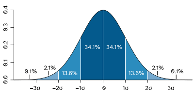
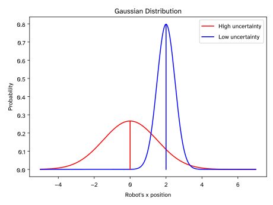
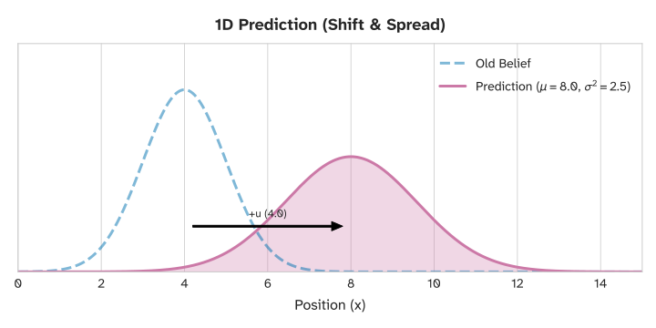
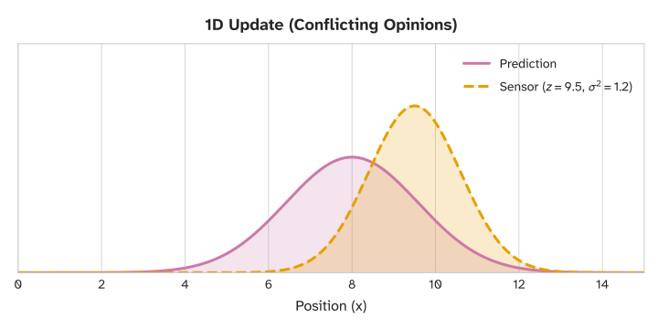
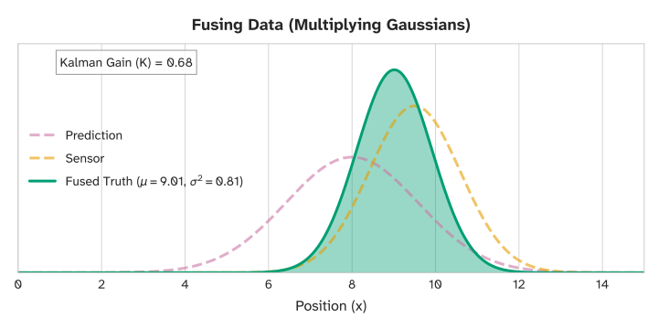
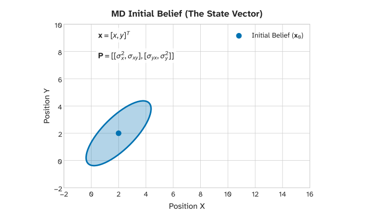
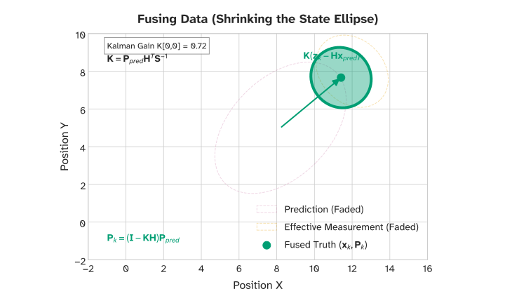
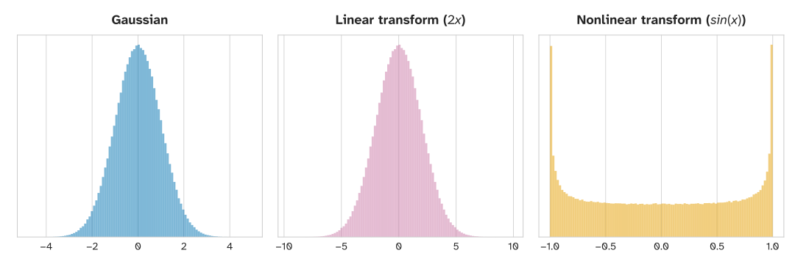

1. SE 423: Introduction to MechatronicsLecture 20-21: Sensor Fusion and Kalman FiltersMarius Juston
Monday, April 6th, 2026
Lecture notes
This is the title slide for SE 423, Introduction to Mechatronics, Lectures 20 and 21: Sensor Fusion and Kalman Filters, presented by Marius Juston on Monday, April 6th, 2026. The University of Illinois Urbana-Champaign logo sits at the top over a dark blue background of faint hand-drawn equations and diagrams.
Over these two lectures you learn how to combine noisy sensors, such as wheel odometry, the IMU, and LiDAR, into one best estimate of where the robot is. The progression goes from the 1D Kalman filter to the N-dimensional filter, and then to the Extended Kalman Filter for nonlinear robots. First comes a quick partner review.
2. Review – 5-minute partner discussion (1/2)
Talk to the person next to you and answer these questions.
- What assumptions were made during path planning / trajectory planning?
- What sensors on the robot help determine it’s the location in the world?
- When could the odometry and the IMU give different values? Which one should you trust?
- If your IMU says you accelerated forward, but LiDAR scan matching says you didn’t move, what should the system believe?
Lecture notes
This slide is a five-minute partner discussion to open the lecture. The heading reads "Review – 5-minute partner discussion," followed by "Talk to the person next to you and answer these questions." There are four questions. First, what assumptions were made during path planning and trajectory planning? Second, what sensors on the robot help determine its location in the world? Third, when could the odometry and the IMU give different values, and which one should you trust? Fourth, if your IMU says you accelerated forward but LiDAR scan matching says you didn't move, what should the system believe?
For the first question, think back to our planning lectures. We quietly assumed the robot knows its pose exactly and that it follows commanded velocities perfectly. Real robots break both assumptions.
For the second, list what your robot actually has. Wheel encoders give odometry, the IMU's gyro and accelerometer give rotation and acceleration, the LiDAR scans the surroundings, and the camera sees the scene. Each of these measures position or motion in a different way, with different errors.
For the third, consider wheel slip, spinning wheels, or a robot picked up off the floor. In those cases the encoders report motion that never happened. The IMU, on the other hand, drifts because of gyro bias and is noisy from vibration.
For the fourth, ask whether the LiDAR scan might be unreliable, as in a featureless hallway, or whether the IMU reading was just a bump or bias.
A common mistake is to pick one sensor and always trust it. No sensor is always right. The better answer is to weigh each source by how uncertain it is in that situation, and that weighting is exactly what sensor fusion and the Kalman filter, today's topic, do.
3. Reminders
Office Hours:
- Monday: 4-6 PM, Neel
- Tuesday: 11-1 PM, Lakshmi
- Tuesday: 1-3 PM, Samuel
- Tuesday: 2-5 PM, Dan & Marius
Lab: Finishing Lab 6 this week. This a 3-week lab!
- Don’t forget to have the Lab LabVIEW application implemented before lab.
Homeworks:
- Check-offs for homework 4 Ex 4 are due April 7, 5PM (The end of office hours)
- Remainder of homework 4 due on Gradescope on April 8, 9AM
- Next homework is primarily the personal project due on April 22, 9AM.
-
- I would highly recommend you thinking now and maybe even starting it now if you have a good idea already!
Lecture notes
This slide lists the weekly reminders in three groups: office hours, lab, and homework. The words "homework 4" appear twice as links to the assignment.
Office hours are Monday 4 to 6 PM with Neel, Tuesday 11 AM to 1 PM with Lakshmi, Tuesday 1 to 3 PM with Samuel, and Tuesday 2 to 5 PM with Dan and Marius.
In lab, you finish Lab 6 this week, the last week of this three-week lab. Have your LabVIEW application implemented before you arrive, so lab time goes to testing on the robot rather than building the interface.
For homework, check-offs for homework 4, Exercise 4, are due Tuesday, April 7, at 5 PM, which is the end of Tuesday office hours. Don't wait until the last hour for a check-off. The rest of homework 4 is due on Gradescope on Wednesday, April 8, at 9 AM.
The next homework is mainly the personal project, due April 22 at 9 AM. Start thinking about it now, and if you already have a good idea, start working on it.
Next is a chance to ask questions about the homework, the lab, or LabVIEW before we move into sensor fusion.
4. Questions? (1/2)
Homework, Lab, LabVIEW?
Lecture notes
This slide shows the word "Questions?" in large white text on the dark blue Illinois background, which carries faint hand-drawn sketches of equations, chemical structures and diagrams. Below a thin orange line, the subtitle asks: "Homework, Lab, LabVIEW?"
This is your chance to ask about the reminders you just saw: homework 4, finishing the three-week Lab 6, or getting your LabVIEW application working before lab. Next, we start sensor fusion: why no single sensor on the robot can be trusted on its own.
5. Sensor Fusion (1/13)
Lecture notes
This is a section title slide. Its orange background carries faint hand-drawn sketches: a cube with flux equations, a sphere, chemical structures, and a commutative arrow diagram. In the center, dark blue text reads "Sensor Fusion." The Illinois logo sits in the top right corner, with "Systems Engineering" and "Grainger Engineering" along the bottom.
With the reminders and questions done, this starts the main topic of Lectures 20 and 21. Sensor fusion means combining measurements from several imperfect sensors, such as wheel encoders, the IMU, and LiDAR, into one estimate of the robot's state. That estimate is better than any single sensor could give you. Next, you look at why each sensor fails on its own, which motivates the Kalman filter.
6. Sensor Fusion (2/13)
In the real world, motors don't spin exactly as commanded due to friction and voltage drops.
Sensors have electrical noise, mechanical imperfections, and environmental interference.
What can cause the LiDAR to fail?
- Reflective / absorptive surfaces: glass, mirrors, black materials
- Fog, rain, dust, snow
- Fast motion relative to scan frequency
What can cause the odometry to fail?
- Slippery terrain for wheel slip
When can cause the IMU fail?
- IMU drift
- Saturating the sensors
If we blindly execute our path plan open-loop, the robot will quickly crash.
Lecture notes
This slide is text only. It opens with two statements: in the real world, motors do not spin exactly as commanded because of friction and voltage drops, and sensors suffer from electrical noise, mechanical imperfections, and environmental interference. It then asks three questions and lists answers under each. LiDAR can fail on reflective or absorptive surfaces such as glass, mirrors, and black materials; in fog, rain, dust, or snow; and during fast motion relative to the scan frequency. Odometry can fail on slippery terrain that causes wheel slip. The IMU can fail through drift and through saturating the sensors. The closing line says that if we blindly execute our path plan open-loop, the robot will quickly crash.
The key idea is that every sensor fails in its own way. Glass lets the laser pass through, a mirror bounces it away, and black material absorbs it, so you get missing or wrong ranges. If the robot moves or turns quickly during one scan, the points in that scan are smeared. Encoders only measure wheel rotation, so a slipping wheel still counts as distance travelled. An IMU's small bias errors grow without bound once you integrate them, which is called drift. A hard bump or a fast spin can also push the IMU past its measurement range, which is called saturation, and then the reading is clipped.
Quick check: on your robot, which of these failures would you expect on a smooth, shiny lab floor?
Because no single sensor is trustworthy, the next slide frames this as the localization problem and introduces the mix of sensors the SE 423 robots combine.
7. Sensor Fusion (3/13)
We need Localization: determining the robot's state (position, velocity, orientation) in the real world.
To solve the localization problem, SE 423 robots use multiple sensors.
Proprioceptive sensors measure internal states: Wheel Encoders (Odometry) and IMUs.
Exteroceptive sensors measure the external environment: LiDAR.
No single sensor is perfect; they all lie to us in different ways.
Lecture notes
This slide is text only, under the title Sensor Fusion. It defines localization and sorts the robot's sensors into two families. It states that we need localization, meaning determining the robot's state (position, velocity, and orientation) in the real world. It says SE 423 robots use multiple sensors to solve this. Proprioceptive sensors measure internal states, namely wheel encoders (odometry) and IMUs. Exteroceptive sensors measure the external environment, namely LiDAR. The final line reads: no single sensor is perfect; they all lie to us in different ways.
On the previous slide you saw that running a path plan open-loop quickly ends in a crash, because motors, wheels, and sensors all misbehave. Localization is the fix. Before the robot can track a trajectory, it has to know where it is, which way it faces, and how fast it moves. That collection of numbers is the state.
The two new terms come from biology. Proprioception is your sense of your own body: you know where your hand is with your eyes closed. On the robot, encoders count wheel rotation and the IMU senses acceleration and rotation rate, so both report the robot's own motion. Exteroception looks outward. The LiDAR measures distances to walls and objects around the robot.
The key point is that these failure modes are different. Odometry is fooled by wheel slip, the IMU drifts, and LiDAR struggles with glass, black surfaces, or dust. Because they fail differently, combining them can cancel out their individual weaknesses, which is the whole idea of sensor fusion.
Quick check: is a gyro proprioceptive or exteroceptive? (Proprioceptive, since it measures the robot's own rotation.) Next, you look at what each sensor is good at and how often it reports.
8. Sensor Fusion (4/13)
Wheel encoders count the rotations of the robot's wheels. By knowing wheel radius and track width, we calculate forward kinematics to estimate position. It provides high-frequency, smooth data for short-term movement.
Similarly, IMUs generate high-frequency, smooth data for short-term movement based on the integration of acceleration.
LiDAR, unlike odometry and IMUs, LiDAR gives us absolute measurements relative to the environment.; however, due to the additional data, the sensor runs at a lower frequency (e.g., 10Hz) compared to an IMU (e.g., 500Hz).
If we are in a perfectly square, featureless hallway, can LiDAR tell us our position along the hallway? What about the IMU / odometry?
Lecture notes
This slide is all text, under the title Sensor Fusion. It compares the three sensors on the SE 423 robot by how fast they report and what kind of information they give, and it ends with a question for you.
Wheel encoders count wheel rotations. If you know the wheel radius and the track width (the distance between the left and right wheels), forward kinematics turns those counts into an estimate of position and heading. This is odometry. It is high-frequency and smooth, so it is good for short-term motion.
IMUs are also high-frequency and smooth. They estimate motion by integrating measured acceleration. Every integration step adds a little error, so both odometry and the IMU are relative sensors that drift over time.
LiDAR is different. It measures absolute distances to the environment, so its error does not pile up the way integrated error does. Each scan carries much more data, though, so it runs slower. The slide gives about 10 Hz for LiDAR versus about 500 Hz for an IMU.
Now the question: in a perfectly square, featureless hallway, can LiDAR tell you where you are along the hallway? No. Every position along the hallway produces the same scan, so LiDAR only pins down your distance to the side walls and your angle relative to them. Odometry and the IMU can track how far you have moved along the hallway, but that estimate slowly drifts.
So each sensor covers the other's blind spot. Keep this complementary picture in mind, because the next slide asks how to actually combine fast, drifting sensors with slow, non-drifting ones.
9. Sensor Fusion (5/13)
We have fast, smooth sensors that drift (IMU, Odometry).
We have slow, computationally heavy sensors that don't drift (LiDAR).
How do we combine them?
Simple averaging doesn't work because their reliability changes over time.
If 2 sensors given measurements give different values which, should you trust?
What if your sensors give you the confidence of their measurements? I.e. the LiDAR is 75% sure of its position and the IMU / Odometry are, in total, 25% sure of their positions?
Lecture notes
This slide is text only, under the title Sensor Fusion. It lists two kinds of sensors. The first kind is fast, smooth and drifts: the IMU and wheel odometry. The second kind is slow and computationally heavy but does not drift: the LiDAR. It then asks how to combine them, and notes that simple averaging fails because each sensor's reliability changes over time. It asks which sensor you should trust when two measurements disagree. Finally, it asks what would happen if each sensor reported its own confidence, for example the LiDAR being 75% sure of its position and the IMU and odometry together being 25% sure.
This follows from the hallway question on the last slide. In a featureless hallway, the LiDAR cannot tell where you are along the hallway, while odometry can, at least for a short time. So the trust you give each sensor should depend on the situation.
A plain average gives every sensor the same weight forever. Odometry error grows the longer you integrate, so its weight should shrink over time. LiDAR deserves a high weight near distinct walls and a low weight in that hallway.
The confidence idea leads to a weighted average: x_fused = 0.75*x_lidar + 0.25*x_odom. Suppose the LiDAR says 5.0 m and odometry says 5.4 m. Then x_fused = 0.75*5.0 + 0.25*5.4 = 5.1 m, so the estimate lands closer to the sensor you trust more.
The open question is where those weights come from, and how they can update automatically as conditions change. The next slide answers this by describing each estimate as a probability distribution, a Gaussian whose variance measures uncertainty. That idea becomes the core of the Kalman filter.
10. Sensor Fusion (6/13)
Instead of saying robot is exactly at “X = 5”, we want to say “We are 90% sure that the robot is near X=5”.
We represent our state as a probability distribution.
We use the Gaussian (Normal) Distribution, defined by a mean () and variance ().

https://en.wikipedia.org/wiki/Normal_distribution
Lecture notes
This slide changes how we describe where the robot is. Instead of claiming the robot is exactly at X = 5, we say "we are 90% sure the robot is near X = 5." The state becomes a probability distribution rather than a single number. The distribution we use is the Gaussian, or normal, distribution, defined by two numbers: the mean, mu, and the variance, sigma squared.
The figure, from the Wikipedia article on the normal distribution (https://en.wikipedia.org/wiki/Normal_distribution), is the standard bell curve. The vertical axis is probability density, peaking at about 0.4 at the mean. The horizontal axis is marked in standard deviations from minus 3 sigma to plus 3 sigma. Shaded bands show how much probability falls in each interval: 34.1% between the mean and 1 sigma on each side, 13.6% between 1 and 2 sigma, 2.1% between 2 and 3 sigma, and about 0.1% beyond 3 sigma.
Adding the bands gives the rule worth remembering: about 68% of the probability lies within 1 sigma of the mean, about 95% within 2 sigma, and about 99.7% within 3 sigma. So the slide's "90% sure" corresponds to a window of roughly plus or minus 1.645 sigma around X = 5.
A common mistake is mixing up variance and standard deviation. Sigma is in meters, while sigma squared is in meters squared, and the Kalman filter equations track sigma squared.
This answers the question from the last slide: if each sensor reports a mean and a variance, we know how much to trust it. Next, we look at why Gaussians are such a convenient choice.
11. Sensor Fusion (7/13)
Why Gaussians?
The mean () represents our best guess of the robot's state.
The variance () represents our uncertainty; a wide curve means we are lost, a narrow curve means we are confident.
Gaussians are mathematically convenient: multiplying two Gaussians results in a new Gaussian!
In addition, a lot of math can be derived in closed form when using Gaussians (most other more complex probability distributions do not allow for this)
Lecture notes
This slide answers the question "Why Gaussians?" It is text only, with four points. The mean, written mu, is our best guess of the robot's state. The variance, written sigma squared (sigma^2), is our uncertainty: a wide curve means we are lost, and a narrow curve means we are confident. Multiplying two Gaussians gives a new Gaussian. And with Gaussians, much of the math can be derived in closed form, which most more complex probability distributions do not allow.
On the last slide you saw the bell curve. Here is why it is the default choice. It needs only two numbers to describe your whole belief: where you think the robot is, and how sure you are. Watch the units. Variance is in units squared, such as m^2. The standard deviation sigma is in meters and sets the width of the curve.
The multiplication property is the key to sensor fusion. Suppose you have an odometry estimate with mean mu1 and variance sigma1^2, and a LiDAR estimate with mu2 and sigma2^2. Multiplying the two curves gives a curve proportional to a Gaussian, with:
mu = (sigma2^2*mu1 + sigma1^2*mu2) / (sigma1^2 + sigma2^2)
sigma^2 = (sigma1^2*sigma2^2) / (sigma1^2 + sigma2^2)
In words, the fused mean is a weighted average that leans toward the more confident sensor. The fused variance is smaller than either input variance. "Closed form" means you compute this with a few multiplications and divisions instead of numerical integration, which is cheap enough to run every control period on the Red Board.
A common mistake is to think the product is the same as adding or simply averaging the curves. Multiplying is what shrinks the uncertainty.
Next, look at two curves and decide which sensor you would trust more.
12. Sensor Fusion (8/13)
Which sensor would you trust more?

Lecture notes
This slide asks a simple question: which sensor would you trust more?
The plot, titled "Gaussian Distribution," shows two bell curves over the robot's x position, with the horizontal axis running from about minus 5 to 7 and the vertical axis labeled "Probability." The red curve, labeled "High uncertainty," is centered at x = 0. It is wide and flat, peaking at about 0.27, with a standard deviation of roughly 1.5. The blue curve, labeled "Low uncertainty," is centered at x = 2. It is narrow and tall, peaking at about 0.8, with a standard deviation of roughly 0.5. A vertical line marks each curve's mean.
You should trust the blue sensor more. Its narrow curve means its readings cluster tightly around 2, so its variance is small. Notice the connection between width and height. Both curves enclose an area of 1, so the narrower curve must be taller. Its peak height is 1/(sigma*sqrt(2*pi)), which gives about 0.8 for sigma = 0.5 and about 0.27 for sigma = 1.5.
A common mistake is reading the vertical axis as a literal probability. It is a probability density. Probability comes from the area under the curve over an interval.
Now the key question: the two sensors disagree, one saying 0 and the other saying 2. Should you pick one, or average them? The best answer is neither. You blend them, weighting each by how certain it is. The fused estimate lands between 0 and 2 but much closer to 2. It is also narrower than either curve alone, because combining information reduces uncertainty.
That variance-weighted blending is exactly what the Kalman filter does, and it is where we go next.
13. 1D Kalman Filter
Lecture notes
This section divider reads "1D Kalman Filter" in large dark blue text on the orange Illinois background, with faint decorative sketches of equations and diagrams, the block I logo, and the footer "Systems Engineering" and "Grainger Engineering."
You just saw that a Gaussian's mean is your best guess and its variance is your uncertainty, and that you trust the narrower curve more. Now you turn that intuition into an algorithm. You start in one dimension, a single state such as the robot's x position, so every quantity is a plain number before it becomes a matrix.
14. Sensor Fusion (9/13)
The Kalman Filter is an optimal estimator for linear systems subject to Gaussian noise.
When would the Kalman Filter not be appropriate?
If your sensor or system if non-linear and / or does not follow a Gaussian noise distribution! Always understand how your sensors / system acts and the underlying assumptions for algorithms!
It operates in a continuous, two-step loop: Predict and Update.
Lecture notes
This slide is text only, with no figures. It states that the Kalman Filter is an optimal estimator for linear systems subject to Gaussian noise. It then asks when the Kalman Filter would not be appropriate, and answers: when your sensor or system is non-linear, does not follow a Gaussian noise distribution, or both. The takeaway is to always understand how your sensors and system behave and what assumptions an algorithm makes. Finally, it says the filter runs in a continuous, two-step loop: Predict and Update.
On the last slide you decided which sensor to trust by comparing the widths of two Gaussian curves. The Kalman Filter makes that judgment automatically and mathematically. "Optimal" means that when its assumptions hold, no other estimator gives a smaller mean squared error.
Linear means the next state and the measurement are linear functions of the current state, such as x_(k+1) = A*x_k + B*u_k. Gaussian means the noise is bell-shaped and fully described by a mean and a variance.
Your robot breaks the linear assumption. Its position update, x_(t+1) = x_t + v_t*cos(theta_t)*dt, depends on the cosine of heading, which is non-linear. LiDAR range and bearing measurements are also non-linear in x and y. Noise can fail the Gaussian assumption too: a LiDAR beam that hits glass, or a wheel that slips, produces outliers far outside a bell curve. In those cases the plain filter can become overconfident or diverge. That is why the Extended Kalman Filter appears later in this lecture.
Quick check: does an encoder's quantization error look Gaussian?
Next you see the Predict and Update loop drawn as a cycle.
15. Sensor Fusion (10/13)
![Kalman filter cycle: prior state estimate x hat sub k minus 1 given k minus 1, with covariance P sub k minus 1 given k minus 1 (a wide, tilted uncertainty ellipse), goes through a prediction step based on a physical model to give x hat sub k given k minus 1 and P sub k given k minus 1. An update step compares this prediction to measurements y sub k (a small round uncertainty region), producing x hat sub k given k and P sub k given k. That output estimate has a smaller ellipse, and k becomes k plus 1 to repeat.](L20-21_files/00e90307a998.svg)
Lecture notes
This slide turns the Predict and Update loop from the previous slide into a block diagram of the Kalman filter cycle.
At the top left, a box labeled "Prior knowledge of state" shows a small plot with a faint, tilted blob: your starting belief about the state, uncertain and spread out. An arrow carries this belief as two quantities, x hat sub k minus 1 given k minus 1 (the state estimate) and P sub k minus 1 given k minus 1 (its covariance, written x̂_(k-1|k-1) and P_(k-1|k-1)). These enter the "Prediction step, based on e.g. physical model," which outputs x̂_(k|k-1) and P_(k|k-1). Next, the "Update step, compare prediction to measurements," takes in measurements y sub k from the right. The measurement plot shows a small, tight dot. The update produces x̂_(k|k) and P_(k|k), which go to the "Output estimate of state" box. Its plot shows a darker, more concentrated blob than the prior. Finally, "Next timestep, k gets k plus 1" sends this result back to the top, and a red arrow shows that today's output becomes tomorrow's prior.
The notation matters. The subscript k|k-1 reads "at time k, given information up to time k-1." It is the predicted estimate, before you have looked at the new measurement. The subscript k|k means you have now included measurement y_k. P is the covariance, the multidimensional version of variance, so it describes the size and tilt of the uncertainty ellipse.
A common mistake is mixing up x̂_(k|k-1) and x̂_(k|k) in code. Keep separate variables for them.
Quick check: which step makes P grow, and which makes it shrink? The next slide answers this with the robot.
16. Sensor Fusion (11/13)
Step 1: The robot moves. We use our fast, noisy sensors (Odometry/IMU) to Predict where we are. Our uncertainty grows.
Step 2: The robot looks. We take a measurement with our absolute sensor (LiDAR) to Update our belief. Our uncertainty shrinks.
Rinse and repeat thousands of times a second.
Lecture notes
This slide is text only. It puts the Kalman filter loop from the previous diagram into plain language in two steps. Step 1: the robot moves, and we use our fast, noisy sensors (odometry and the IMU) to predict where we are, so our uncertainty grows. Step 2: the robot looks, and we take a measurement with our absolute sensor (LiDAR) to update our belief, so our uncertainty shrinks. The last line says to rinse and repeat thousands of times a second.
Map this onto your robot. Wheel encoders and the gyro report quickly how far you moved, and you integrate those readings into a position. Every integration step adds a little error, and nothing in that sensor corrects it, so the estimate drifts and the spread of your belief keeps widening. A LiDAR scan is different. It measures your position relative to fixed walls, so its error does not accumulate. When it arrives, the filter blends it with the prediction, weighting each by how much you trust it, and the uncertainty collapses.
In the cycle diagram, "predict" is the step from x hat sub k minus 1 given k minus 1 to x hat sub k given k minus 1. "Update" is the step to x hat sub k given k.
A common mistake is to assume the two steps must alternate one-for-one. Prediction can run many times between measurements, because fast sensors usually outpace the absolute one.
Ask yourself: what happens to the uncertainty if the LiDAR stops reporting? The next animation lets you see the answer as a sawtooth, with variance growing between measurements and dropping at each one.
17. Sensor Fusion (12/13)
Animation (47 s, no sound): a 1D Kalman filter tracking a moving object's position and velocity over 140 time steps. The top plot shows the position estimate as a bell-shaped probability density with a shaded plus-or-minus 3 sigma band, the true position as a green X, and, every 20 steps, a sensor measurement as a dashed orange line. Between measurements only the prediction step runs: the curve moves with the estimated velocity and spreads out. At each measurement the correction step pulls the estimate toward it and the curve becomes tall and narrow. The bottom plot shows position variance against time step as a sawtooth: it grows from 5 to about 11 by step 20, drops to near zero at each correction, and its peaks shrink (about 4, then about 2) as the filter converges. At step 140 the estimate is 15.71 against a true position of 15.65. (embedded video, in the slide deck)
Lecture notes
This slide plays a 47-second silent animation of a one-dimensional Kalman filter that tracks an object's position and velocity over 140 time steps. The still frame shows step 0, a prediction step. A text box reads: k = 0, estimated mean position -1.93, estimated velocity 1.50, position variance 5.062 (standard deviation 2.250), and ground truth position 0.00, velocity 0.89. A small legend box lists the noise settings: process noise Q = [[0.05, 0], [0, 0.02]] and measurement noise R = [[0.15]].
The top plot shows probability density against position, from -10 to 20. The blue bell curve is the predicted probability density function, the shaded band is the plus-or-minus 3 sigma confidence interval, and a green X marks the true position at 0. The bottom plot tracks position variance against time step, from 0 to 140, and starts with a single point near 5.
As the animation runs, you see the two steps from the previous slide in action. Between measurements, only prediction runs: the curve slides with the estimated velocity and widens, and variance climbs from 5 to about 11 by step 20. Every 20 steps a measurement appears as a dashed orange line. The update pulls the estimate toward it, and the curve becomes tall and narrow. The variance plot forms a sawtooth whose peaks shrink, to about 4 and then about 2, as the filter converges. By step 140 the estimate is 15.71 against a true position of 15.65.
Notice that the filter starts wrong in both position and velocity, yet still recovers. Next, we unpack the predict step.
18. Predict (1/3)
Lecture notes
This is a section divider. The slide shows the single word "Predict" in large white text on the dark blue Grainger Engineering background, with a short orange-red accent line beneath it and faint decorative sketches of equations and diagrams behind it.
The animation you just watched alternated between two steps. We now take the first one, predicting, on its own: using odometry and the robot's motion model to move the estimate forward, and seeing why the uncertainty grows while you do it. The Update step gets its own section afterward.
19. Sensor Fusion (13/13)
Last lectures, we covered algorithms like A*, Dijkstras, Hybrid A* for path planning.
We learned to compute an optimal, collision-free trajectory from Point A to Point B.
However, path planning operates in a perfect, simulated world!
The fundamental assumption we made about the robot to execute these plans were:
Perfect localization and actuation!
Lecture notes
This slide steps back to connect the previous lectures to the Predict step. It has no figures, only text. It reminds you that in the last lectures we covered path-planning algorithms such as A*, Dijkstra's algorithm, and Hybrid A*, and learned to compute an optimal, collision-free trajectory from Point A to Point B. It then points out that path planning operates in a perfect, simulated world. The fundamental assumption we made so the robot could execute those plans, shown centered at the bottom of the slide, is: perfect localization and actuation.
Perfect localization means the robot always knows exactly where it is on the map. Perfect actuation means that when you command a motion, such as driving 1 meter forward, the robot does exactly that. A* happily returns a path through a narrow gap, but on the real robot neither assumption holds. Wheels slip, encoders have finite resolution, the floor is uneven, and the motors do not respond identically. A path that clears an obstacle by a few centimeters in simulation can clip it in the lab if the robot's belief about its own position has drifted.
This is why the Predict step exists. Before we use the robot's model to guess where it moved, we have to admit that the guess is imperfect, and we need a way to track how imperfect it is. That is what the growing variance in the animation two slides ago represented.
As you go to the next slide, think about this: if your robot follows a planned path using only encoder dead reckoning, does its position error stay constant, shrink, or grow over time?
20. Sensor Fusion – Predict Step (1/39)
We use a physical model of the robot (kinematics) and our control inputs () to guess the new state.
Because we know our model and our encoders are imperfect, we actively increase our uncertainty covariance ().
This represents "flying blind" between reference measurements.
If we close our eyes and take 5 steps, are we more or less certain of our position than before we moved?
Lecture notes
This slide introduces the predict step of a Kalman filter. It is all text, in four short statements. First, you use a physical model of the robot, its kinematics, together with your control inputs, written as the symbol u, to guess the new state. Second, because you know the model and the encoders are imperfect, you actively increase the uncertainty covariance, written as the symbol P. Third, this is "flying blind" between reference measurements. Fourth, a question: if you close your eyes and take 5 steps, are you more or less certain of your position than before you moved?
The previous slide pointed out that path planning assumed perfect localization and actuation. The predict step is the first half of how you handle that assumption being false. The robot does not wait for a sensor. It uses what it commanded, such as wheel speeds, and what its encoders report to propagate its best guess forward in time. For our robot, that means dead reckoning: integrating wheel motion into a new x, y, and heading.
Every prediction carries error. Wheels slip, encoder counts are quantized, and the model is an approximation. So the filter adds process noise and P grows. The answer to the question is "less certain." Each blind step adds a little error, and the errors accumulate.
A common mistake is to treat the predicted state as exact simply because the math is deterministic. The mean moves, but the covariance must widen.
Next, the idea is made concrete with a robot on a 1D track, where the state and the variance are each a single number.
21. Sensor Fusion – Predict Step (2/39)
Before we look at massive matrices, let's look at a robot on a 1-Dimensional train track.
Its state is just one number: its position on the track, . Its uncertainty is also just one number: the variance, .
Together, they form a 1D Gaussian (Bell Curve) representing our "belief".
Lecture notes
This slide has no figures, only three short statements. It sets up a simplified example before the full Kalman filter: a robot on a one-dimensional train track. Its state is a single number, its position on the track, written with the Greek letter mu. Its uncertainty is also a single number, the variance, written sigma squared. Together these two numbers define a 1D Gaussian, or bell curve, which represents the robot's "belief" about where it is.
The previous slide described the predict step in general terms: use the robot's kinematic model and control inputs to guess the new state, then increase the uncertainty because neither the model nor the encoders are perfect. The general Kalman filter does this with state vectors and covariance matrices. Here you strip it down to one dimension so the idea is clear before the linear algebra arrives.
The key idea is that the robot does not claim to know its position exactly. It carries a probability distribution. The mean, mu, is the best guess of position. The variance, sigma squared, measures how spread out that guess is. A small sigma squared gives a tall, narrow bell, meaning you are confident. A large sigma squared gives a short, wide bell, meaning you are unsure. Remember that the standard deviation sigma is the square root of the variance and has the same units as position. The variance has units of position squared.
A quick check: if sigma squared equals 4 square meters, what is the standard deviation? It is 2 meters.
On the next slide you see this belief plotted as a bell curve with mean 4 and variance 1.
22. Sensor Fusion – Predict Step (3/39)
Lecture notes
This slide is a single plot titled "Initial Belief." The horizontal axis is Position (x), with tick marks every 2 units from 0 to 14 and the axis extending to about 15. The vertical axis has no labels; it represents probability density. A blue bell curve, shaded underneath, peaks at x = 4 and falls almost to zero by about x = 1 on the left and x = 7 on the right. The legend reads mu = 4.0, sigma^2 = 1.0, that is, mean 4.0 and variance 1.0.
This is the 1D train-track robot from the previous slide, drawn as a Gaussian. The mean, mu, is our best guess of position: 4. The variance, sigma^2, measures how unsure we are. Because the variance is 1.0, the standard deviation sigma is also 1.0. That gives you a useful rule of thumb. About 68 percent of the probability lies between 3 and 5 (within one sigma), about 95 percent between 2 and 6, and about 99.7 percent between 1 and 7. So when we say "the robot is at 4," we really mean "almost certainly somewhere between 1 and 7, most likely near 4."
A common mistake is to confuse variance with standard deviation. They match here only because the variance is 1. If the variance were 4, the standard deviation would be 2, and the curve would spread roughly twice as wide.
Quick check: if you made the variance smaller, would the peak get taller or shorter? Taller, because the area under the curve must stay 1.
This is our starting point. Next, the robot commands its motors to drive forward, and we see what the predict step does to both the mean and the width of this curve.
23. Sensor Fusion – Predict Step (4/39)
The robot commands its motors to move forward by distance .
Our new predicted mean simply shifts:
But moving is never perfect (slipping, bumps). We add adds process noise ().
Therefore our uncertainty always grows.
Lecture notes
This slide states the 1D Kalman filter predict step in words and two equations. The robot commands its motors to move forward by a distance u. The predicted mean simply shifts by that amount: mu_pred = mu_old + u, read "mu predicted equals mu old plus u." But motion is never perfect, because wheels slip and the robot hits bumps, so we add process noise with variance sigma_move squared. The slide stresses, in bold, that uncertainty therefore always grows: sigma_pred^2 = sigma_old^2 + sigma_move^2, read "sigma predicted squared equals sigma old squared plus sigma move squared."
Here is how this works on the train-track robot from the last slide. We start with a belief of mean 4 and variance 1. If you command u = 4, the best guess moves to 4 + 4 = 8. The shape of the bell curve also changes. Process noise means the random error introduced by the motion itself, not by any sensor. Because that error is independent of our old error, the variances add.
A common mistake is to add standard deviations instead of variances. Variances add for independent Gaussians; standard deviations do not. Another mistake is to think a good motion model can shrink uncertainty. Predicting alone can only widen the curve. Only a measurement, which comes in the update step, can narrow it.
On your robot, u comes from wheel encoder odometry. Wheel slip on the floor is exactly the sigma_move you would tune.
Quick check: on the next slide the prediction has variance 2.5. What value of sigma_move squared does that imply? The answer is 2.5 minus 1, which is 1.5. Next, you see this shift-and-widen step plotted.
24. Sensor Fusion – Predict Step (5/39)

Lecture notes
This slide is a plot titled "1D Prediction (Shift and Spread)." The horizontal axis is position x, from 0 to about 15. A dashed light-blue curve, labeled "Old Belief," is the same Gaussian from two slides ago: mean 4, variance 1, tall and narrow, with almost all of its probability between about 1 and 7. A black arrow labeled "plus u (4.0)" points to the right, to a solid pink, shaded Gaussian labeled "Prediction, mu = 8.0, sigma squared = 2.5." The pink curve is centered at 8. It is clearly wider and shorter than the old belief and spreads from roughly 4 to 12.
This picture shows the two equations from the previous slide. The mean shifts by the commanded motion: mu_pred = mu + u = 4 + 4 = 8. The variance grows by the process noise Q: sigma2_pred = sigma2 + Q. The variance went from 1 to 2.5, so this example uses Q = 1.5. The standard deviation goes from 1 to about 1.58. The curve gets wider, and because the area under any probability density must stay 1, the peak gets lower. Its height drops from about 0.40 to about 0.25.
The key point is that prediction alone never makes you more certain. Every time your robot dead-reckons with encoder odometry, the bell curve slides along and gets fatter. A common mistake is to shift the mean but forget to add Q, which makes the filter overconfident.
Quick check: if you predicted again with u = 4 and the same Q, where would the mean be, and what would the variance be? (The mean would be 12 and the variance 4.0.)
Next, you see why adding Gaussians works this way: the sum of independent normal random variables is itself normal.
25. Sensor Fusion – Predict Step (6/39)
This prediction updates the covariance and the means as such because we are assuming Gaussian random variables.
Let X and Y be independent random variables that are normally distributed, then their sum is also normally distributed. i.e., if
Then,
For how to derive it you can look here (from Wikipedia)
Lecture notes
This slide justifies the predict step from the last two slides. It states that the prediction updates the mean and the variance the way it does because we assume Gaussian random variables. It then gives the key fact: if X and Y are independent, normally distributed random variables, their sum is also normally distributed.
The slide writes this as X ~ N(mu_X, sigma_X^2) and Y ~ N(mu_Y, sigma_Y^2). Read aloud: X is normal with mean mu X and variance sigma X squared, and Y is normal with mean mu Y and variance sigma Y squared. With Z = X + Y, the result is Z ~ N(mu_X + mu_Y, sigma_X^2 + sigma_Y^2). In words, the means add and the variances add. A link labeled "here (from Wikipedia)" points to the derivation if you want the full proof.
Map this onto the robot. X is your current belief about position. Y is the motion: the commanded distance u plus process noise with variance Q. Their sum is the predicted position, so the predicted mean is x + u and the predicted variance is P + Q. In the plot on the previous slide, the belief centered at 4 shifts by u = 4 to a mean of 8. Its variance grows to 2.5 because the process noise variance is added on. Variances only ever add here, which is why prediction alone always makes you less certain.
A common mistake is adding standard deviations instead of variances. A second is forgetting that the result depends on independence: the motion noise must not be correlated with your current estimate error.
Quick check: if the old variance is 1 and Q is 1, what is the new standard deviation? The new variance is 2, so the standard deviation is the square root of 2, about 1.41, not 2.
Next, a sensor measurement arrives, and you need a way to combine two Gaussians into one. That is the update step.
26. Update (1/3)
Lecture notes
This section divider reads "Update" in large white text with a red accent line beneath it, on the course's dark blue background.
You have just finished the predict step. The motion command u shifted the mean of your belief, and the process noise widened it, because adding independent Gaussians adds their variances. Prediction alone only ever grows uncertainty. Now a sensor measurement arrives, and the update step fuses it with the prediction to shrink that uncertainty back down.
27. Sensor Fusion – Predict Step (7/39)
Now, our absolute sensor (like a 1D LiDAR) takes a measurement.
It says the robot is at position , with a sensor noise variance of .
We now have two Gaussian curves: our flattened prediction curve, and the new sensor curve.
How do we combine these two conflicting opinions into one single truth?
Lecture notes
This slide opens the update step of the 1D Kalman filter, right after the "Update" section divider. The slide title still reads "Sensor Fusion – Predict Step," but the content here is the start of the update. The slide is text only, with four short lines.
First line: our absolute sensor, for example a 1D LiDAR, takes a measurement. Second line: the sensor says the robot is at position z, with a sensor noise variance of sigma squared sub sensor, written sigma_sensor^2. Third line: we now have two Gaussian curves, our flattened prediction curve and the new sensor curve. Fourth line: how do we combine these two conflicting opinions into one single truth?
Recall what the predict step did. We pushed the estimate forward using the motion model, and because adding independent Gaussians adds their variances, the prediction curve came out wider and flatter. Our confidence dropped.
An absolute sensor is different from odometry. It measures position directly against the world, so its error does not accumulate over time. Its reading is still noisy, so we model it as its own Gaussian, centered at z with variance sigma_sensor^2.
The two curves usually disagree. The prediction says one place and the sensor says another. Neither is fully right. Each is an opinion with its own amount of uncertainty.
A common mistake is to just trust the sensor and throw away the prediction. That discards useful information, especially when the sensor is noisy.
Quick check: if sigma_sensor^2 were very large, which curve would you expect the fused answer to stay closer to? The next slide plots both curves so you can see the conflict.
28. Sensor Fusion – Predict Step (8/39)

Lecture notes
This plot, titled "1D Update (Conflicting Opinions)," shows the situation from the previous slide. The horizontal axis is position x, from 0 to about 15. The vertical axis is probability density, with no numbers marked. The legend lists two curves.
The pink curve is the prediction. It is a bell curve centered at x = 8, and it is wide and low because the predict step flattened it. Each time you propagate the state forward with the motion model, you add process noise, so the variance grows. The dashed orange curve is the sensor measurement from our absolute sensor, the 1D LiDAR. It is centered at z = 9.5 with variance sigma^2 = 1.2, read "sigma squared equals 1.2." It is narrower and taller than the prediction, which tells you the sensor is more certain than our predicted state. The two curves overlap mostly between about 8 and 10, with the pink peak on the left and the orange peak on the right.
The key idea is that neither curve is "the truth." Both are probability distributions describing where the robot might be, and they disagree by 1.5 units. A common mistake is to trust the sensor and overwrite the estimate with z = 9.5, which throws away information from the model. Another mistake is to simply average the two to 8.75, which ignores how certain each one is. You want a weighted compromise that leans toward the more confident source.
A quick check: before the next slide, guess whether the fused estimate will land closer to 8 or to 9.5, and whether it will be wider or narrower than these curves. Next, you see how multiplying the two Gaussians answers that.
29. Sensor Fusion – Predict Step (9/39)
In probability, to fuse two independent estimates, we multiply their distributions together.
The magical property of Gaussians: Multiplying two Gaussians always produces a new Gaussian.
Because the new curve represents the overlapping area of agreement, it is always taller and narrower than both original curves.
Fusing data reduces uncertainty!
Lecture notes
This slide answers the question from the last two: how do you combine the wide prediction curve with the narrower sensor curve? The slide is text only and makes four points. To fuse two independent estimates in probability, you multiply their distributions together. The "magical property" of Gaussians is that multiplying two Gaussians always produces a new Gaussian. Because the new curve represents the overlapping area of agreement, it is always taller and narrower than both original curves. The conclusion: fusing data reduces uncertainty.
Multiplying makes sense because the fused belief is high only where both sources agree that the robot is likely to be. Where either curve is near zero, the product is near zero. Strictly, you rescale the product so its area is one again, and the result is still a bell curve. This matters for the Kalman filter: the result stays Gaussian, so you only ever track two numbers, a mean and a variance, and you can repeat predict and update forever without the math growing.
Here is the step the slide skips. If the prediction has mean mu1 and variance sigma1^2, and the sensor has mean mu2 and variance sigma2^2, the fused variance satisfies 1/sigma^2 = 1/sigma1^2 + 1/sigma2^2. That is always smaller than either input variance. The fused mean is mu = (sigma2^2*mu1 + sigma1^2*mu2)/(sigma1^2 + sigma2^2), a weighted average that leans toward the more certain source.
The slide title says "Predict Step," but this combining is really the update step.
Quick check: before the next slide, guess where the fused mean lands between 8 and 9.5. Next, you will see it plotted at 9.01 with variance 0.81, closer to the sensor.
30. Sensor Fusion – Predict Step (10/39)

Lecture notes
This slide shows the result of fusing the two estimates from the last slide. The plot, titled "Fusing Data (Multiplying Gaussians)," shows probability against position x from 0 to 14 with three curves. The pink dashed prediction is wide and low, centered at 8. The orange dashed sensor reading is narrower and taller, centered near 9.5. The solid green curve, shaded underneath, is the fused estimate. It is the tallest and narrowest of the three, with mean mu = 9.01 and variance sigma squared = 0.81. A box in the corner reads Kalman Gain (K) = 0.68.
Notice two things. First, the fused mean of 9.01 lies between 8 and 9.5, but closer to the sensor, because the sensor is the more certain input. Second, the fused variance of 0.81 is smaller than both input variances: the sensor's 1.2 and the prediction's, which works out to about 2.5. This is the claim from the previous slide shown with numbers. Multiplying two Gaussians gives a new Gaussian that is more confident than either one.
You can check the mean yourself: 9.01 is about 8 + 0.68*(9.5 - 8). So the gain of 0.68 means you move 68 percent of the way from the prediction toward the measurement.
A common mistake is to think fusion just averages the two means. It is a weighted average, and the weights come from the variances.
Quick check: if the sensor variance doubled, which way would the green peak shift? The next slides derive K and answer that formally.
31. Sensor Fusion – Predict Step (11/39)
The math behind that multiplication gives us the 1D Kalman Gain ():
If the sensor is perfect, , and then we trust the sensor completely.
If the sensor is garbage, , we ignore it!
Lecture notes
This slide gives the result of the Gaussian multiplication from the last two slides. The text reads: "The math behind that multiplication gives us the 1D Kalman Gain, K." A centered equation follows: K equals prediction uncertainty divided by total system uncertainty, or K = (prediction uncertainty) / (total system uncertainty). Below it are two cases. If the sensor is perfect, K = 1, and you trust the sensor completely. If the sensor is garbage, K = 0, and you ignore it.
In symbols, the prediction uncertainty is the predicted variance, call it P. The total system uncertainty is that variance plus the sensor's variance, call it R. So K = P / (P + R). The two cases follow from this. A perfect sensor has R = 0, so K = P / P = 1. A useless sensor has R growing without bound, so K shrinks toward 0.
Connect this to the plot on the previous slide. The prediction was centered at 8 and the sensor near 9.5, with K = 0.68. The fused mean is 8 + 0.68*(9.5 - 8), which is about 9.0. That puts it about two-thirds of the way toward the sensor, because the sensor was the more certain of the two.
A common mistake is to treat K as a property of the sensor alone. K compares two uncertainties. Even a decent sensor gets a small K if your prediction is already very confident.
Quick check: if your prediction and your sensor have equal variance, what is K? It is 0.5, so you split the difference. The next slide shows how K enters the position update.
32. Sensor Fusion – Predict Step (12/39)
The math behind that multiplication gives us the 1D Kalman Gain ():
is just a ratio! It's the ratio of our prediction uncertainty to the total system uncertainty. It always falls between 0 and 1.
We update our position using this ratio:
All it really says is “how much of the measurement should we incorporate”?
Lecture notes
This slide continues from the previous one, which also opened with the 1D Kalman gain, K. The top line reads, "The math behind that multiplication gives us the 1D Kalman Gain (K)." The equation is K = sigma_pred^2 / (sigma_pred^2 + sigma_sensor^2), read as "K equals the prediction variance divided by the sum of the prediction variance and the sensor variance."
The slide then says K is just a ratio: your prediction uncertainty divided by the total uncertainty. Both variances are positive, so the numerator is always smaller than the denominator, and K always falls between 0 and 1.
Next comes the update equation, mu_new = mu_pred + K*(z - mu_pred), read as "the new mean equals the predicted mean plus K times the measurement z minus the predicted mean." The slide closes with, "All it really says is: how much of the measurement should we incorporate?"
The term (z - mu_pred) is called the innovation, or residual. It is the surprise: how far the sensor reading lands from where you expected to be. K scales that surprise. When K = 0 you keep your prediction. When K = 1 you jump all the way to the measurement. Anything in between moves you part of the way.
Check this against the plot two slides back. The prediction was at 8, the sensor near 9.5, and K = 0.68. That gives 8 + 0.68*(1.5), which is about 9.0 and matches the fused mean of 9.01.
A common mistake is to think a large K means a good filter. K only describes relative trust. A large K means your prediction is much less certain than your sensor.
Quick check: if both variances are equal, what is K? (It is 0.5, so you land halfway between the prediction and the measurement.)
Next, we ask how this scalar recipe extends to a robot with x, y, and heading.
33. Sensor Fusion – Predict Step (13/39)
That’s all the Kalman filter is!
What is the current limitation of the formulation?
We are only looking at a problem with 1 state, can this be generalized to be N-dimensional?
For our differentiable robot, we live in a 2D plane with an , , and heading .
We can no longer use a single scalar number for position. We must use a State Vector: .
We can no longer use a single scalar variance . We must use a Covariance Matrix, .
Lecture notes
This slide is text only, under the title "Sensor Fusion – Predict Step." It opens with "That's all the Kalman filter is!", asks "What is the current limitation of the formulation?", and answers with a centered question: we are only looking at a problem with 1 state, so can this be generalized to N dimensions? It then notes that our robot lives in a 2D plane with an X, a Y, and a heading theta.
The slide names two changes. First, the single scalar mean mu for position becomes a state vector, x = [X, Y, theta]^T, read as "x equals the column vector X, Y, theta," where the T (transpose) makes it a column. Second, the single scalar variance sigma^2 becomes a covariance matrix, P.
With the last two slides you have the whole 1D filter. You predict, then blend in a measurement using the gain K, a ratio between 0 and 1. The ideas do not change in more dimensions; only the bookkeeping does.
The slide says "differentiable robot," which here means our differential-drive robot. Its pose needs three numbers, so the state is a vector of length 3 and P is a 3 by 3 matrix. The diagonal entries of P are the variances of X, Y and theta. The off-diagonal entries are covariances, which describe how errors in one state relate to errors in another.
A common mistake is to think only the diagonal matters. Off-diagonal terms are exactly how a heading error spreads into a position error as the robot drives forward.
Next, the N-dimensional Kalman filter rewrites predict and update with vectors and matrices.
34. ND - Kalman Filter
Lecture notes
This is a section title slide that reads "ND - Kalman Filter," where ND means N-dimensional. The background is the course's orange template with faint hand-drawn engineering sketches, which are decorative only.
You have now seen the whole 1D filter: predict, then update with a Kalman gain between 0 and 1. In this section you generalize it. The scalar position becomes a state vector, such as x, y and heading theta for the robot. The scalar variance becomes a covariance matrix P. Next comes the predict step.
35. Predict (2/3)
Lecture notes
This section title slide reads "Predict" in large white text with an orange accent line beneath it, over the course's dark blue background of faint hand-drawn equations and sketches.
You have just seen why one scalar state is not enough for the robot: x, y and heading need a state vector and a covariance matrix. This section rebuilds the predict step in N dimensions. It starts with the initial belief drawn as an uncertainty ellipse, then replaces the scalar motion update with a state transition matrix.
36. Sensor Fusion – Predict Step (14/39)

Lecture notes
This slide starts the multi-dimensional, or MD, version of the predict step by showing what our belief looks like before anything moves. The plot is titled "MD Initial Belief (The State Vector)", with Position X on the horizontal axis from minus 2 to 16 and Position Y on the vertical axis from minus 2 to 10. A blue dot at (2, 2), labeled "Initial Belief (x_0)", marks the mean. Around it is a shaded blue ellipse, tilted about 45 degrees, running from roughly minus 0.5 to 4.5 on both axes. Two equations are written in the upper left: bold x = [x, y]^T, read "the state vector x equals x, y transposed", and bold P = [[sigma_x^2, sigma_xy], [sigma_yx, sigma_y^2]], read "the covariance matrix P has first row sigma x squared, sigma x y, and second row sigma y x, sigma y squared."
In 1D, our belief was one mean and one variance. Here the mean becomes a column vector of every state we track, and the variance becomes the covariance matrix P. The diagonal entries are the variances of x and y on their own. The off-diagonal entries, the covariances, describe how errors in x and y move together. P is symmetric, so sigma_xy = sigma_yx.
The ellipse is a contour of equal probability for this 2D Gaussian. Its tilt comes from the off-diagonal terms. A positive sigma_xy means that if the true x is larger than we think, the true y probably is too. For the robot, this is your x, y position estimate.
Quick check: what shape would the ellipse have if sigma_xy = 0 and sigma_x^2 were larger than sigma_y^2? (It would be an axis-aligned ellipse stretched along X.)
Next, we see how the state transition matrix F moves this belief forward in time.
37. Sensor Fusion – Predict Step (15/39)
Let's translate our 1D prediction () to N-Dimensions:
becomes the state vector
is our state transition matrix (how physics updates the state).
Lecture notes
This slide carries the 1D prediction over to N dimensions. At the top is the 1D rule you already know, mu_pred = mu_old + u: the predicted mean is the old mean plus the commanded motion. Below it is the N-dimensional version, x_(k|k-1) = F*x_(k-1|k-1) + B*u_k. In words: x at step k given information up to step k minus 1 equals F times x at step k minus 1 given information up to step k minus 1, plus B times u at step k. Two lines of text then say that mu becomes the state vector x, and that F is the state transition matrix, which describes how physics updates the state.
Read the subscripts carefully. The "k|k-1" means "our estimate at time k, using measurements only up to time k minus 1." That is the prior, before any new sensor reading arrives. The term x_(k-1|k-1) is the best estimate from the last cycle, after its update.
Each piece has a 1D counterpart. The scalar mean mu becomes a vector x that can hold several quantities at once, such as position x, position y and heading theta, or position and velocity. In 1D the old mean carried over unchanged, which is the same as multiplying by 1. F generalizes that 1. It lets one state affect another, for example x_(t+1) = x_t + v_t*dt, where velocity feeds into position. B is the control input matrix. It maps your commands u_k, such as wheel speeds or motor voltage, into changes in the state.
A common mistake is to think F only scales each state independently. Its off-diagonal entries are exactly what couple the states together.
The next slide shows this graphically: the mean shifts by F*x + B*u, and the covariance grows to F*P*F^T + Q.
38. Sensor Fusion – Predict Step (16/39)
![Plot of the Kalman filter predict step on position X versus position Y axes. The old belief is a point at (2, 2) inside a narrow, tilted blue covariance ellipse; a slightly larger pink outline shows it transformed by F P F transpose. A motion arrow moves the mean to about (8, 5), where a much larger filled pink ellipse shows the predicted prior: x sub pred equals F x sub k minus 1 plus B u, and P sub pred equals F P sub k minus 1 F transpose plus Q. Prediction shifts the estimate and grows its uncertainty.](L20-21_files/e1a476346e5c.svg)
Lecture notes
This slide is a plot titled "MD Prediction (Linear Transformation)," where MD means multi-dimensional. It shows what the predict step does to a 2D position belief. The axes are Position X, from minus 2 to 16, and Position Y, from minus 2 to 10. The legend has a light blue dot for the Old Belief and a pink dot for the Predicted Prior, written x_pred, P_pred.
The old belief is centered at (2, 2), inside a dashed blue ellipse tilted about 45 degrees that spans roughly minus 0.5 to 4.5 on both axes. A dotted pink outline almost on top of it shows that same ellipse after transformation by F P F transpose. A black arrow labeled "Motion (F P F transpose)" carries the mean to about (8, 5). There, a much larger filled pink ellipse, spanning roughly 5 to 12 in X and 1.5 to 8.5 in Y, is the predicted prior. Two equations are printed beside it.
The first is x_pred = F*x_(k-1) + B*u: "x pred equals F times x k minus 1, plus B times u." Physics, through F, and your control input, through B*u, move the mean.
The second is P_pred = F*P_(k-1)*F^T + Q: "P pred equals F times P k minus 1 times F transpose, plus Q." This is the N-dimensional version of the 1D rule from the previous slide, where the variance grew by adding process noise. The covariance is first reshaped by the motion, which can rotate and stretch the ellipse. Then the process noise Q inflates it.
The key takeaway is that prediction shifts the estimate and always grows the uncertainty. On your robot, u could be the wheel-encoder odometry. Without a measurement, the ellipse only gets bigger.
A common mistake is writing F*P instead of F*P*F^T, or forgetting to add Q.
Next, we look closely at what the entries of P mean, especially the off-diagonal correlations.
39. Sensor Fusion – Predict Step (17/39)
The Covariance Matrix represents multi-dimensional uncertainty as an ellipse, not a 1D curve.
The diagonal elements are the individual variances (e.g., how unsure are we about independent of everything else?).
The off-diagonal elements are the critical addition: Correlations.
If our robot only drives forward, and we are uncertain about our heading , will that create an uncertainty in as we travel?
Yes, errors in are highly correlated with errors in and .
Lecture notes
This slide is text only, under the title "Sensor Fusion – Predict Step." It states that the covariance matrix P represents multi-dimensional uncertainty as an ellipse, not a 1D bell curve. The diagonal elements are the individual variances, for example how unsure we are about X on its own. The off-diagonal elements add something new: correlations. The slide then asks a question: if the robot only drives forward and we are uncertain about its heading theta, will that create uncertainty in Y as it travels? The answer, centered at the bottom, is yes. Errors in theta are highly correlated with errors in X and Y.
In 1D, uncertainty was a single number, the variance. With a state vector such as [X, Y, theta], P is a 3 by 3 matrix. Entry P_(i,i) is the variance of state i. Entry P_(i,j) is the covariance between states i and j. P is symmetric, so P_(i,j) = P_(j,i). A nonzero off-diagonal term means an error in one state tends to come with an error in another. That is what tilts the ellipse you saw on the previous slide.
Here is why the heading example works. Suppose the robot believes it points along X but is actually off by a small angle delta_theta. After driving a distance d, its sideways error is about d*delta_theta. So uncertainty in theta becomes uncertainty in Y, and that Y uncertainty keeps growing the farther you drive. The F P F^T term in the predict step builds this coupling into P automatically.
A common mistake is to treat P as diagonal only. Doing so throws away exactly the information that lets a later heading measurement also correct position.
Next, we look at a concrete 2D covariance matrix and see how its numbers shape the ellipse.
40. Sensor Fusion – Predict Step (18/39)
![Plot: 2D covariance of robot x and y position. Covariance matrix Sigma has sigma x squared equals 4.0, sigma y squared equals 3.0, and sigma x y equals sigma y x equals 2.5. A tilted 1-sigma ellipse is centered on the mean at (5, 5). Its long axis runs diagonally up-right, showing positive x-y correlation. Horizontal and vertical arrows mark sigma x and sigma y. An orange-red arrow, square root of lambda 1 times v 1, marks the major axis along the tilt. A perpendicular green arrow, square root of lambda 2 times v 2, marks the minor axis.](L20-21_files/b85f74fd7b4d.svg)
Lecture notes
This slide is a plot of a two-dimensional covariance for the robot's position. The horizontal axis is Robot X Position and the vertical axis is Robot Y Position, both from 0 to 10. A box in the upper left gives the covariance matrix: Sigma = [sigma_x^2, sigma_xy; sigma_yx, sigma_y^2] = [4.0, 2.5; 2.5, 3.0]. In words, the variance in x is 4, the variance in y is 3, and the two off-diagonal covariance terms are both 2.5.
The mean, a black dot, sits at (5, 5). Around it is a dark blue 1-sigma ellipse, labeled in the legend as the 1-sigma contour, with lighter and larger ellipses extending further out. All of them tilt up and to the right. Dashed crosshairs through the mean carry horizontal and vertical arrows labeled sigma_x and sigma_y. An orange-red arrow along the long diagonal is labeled square root of lambda_1 times v_1, the major axis. A shorter green arrow perpendicular to it is labeled square root of lambda_2 times v_2, the minor axis.
This picture shows what the off-diagonal terms from the last slide actually do. Because sigma_xy is positive, an error that pushes x high tends to push y high too, so the ellipse tilts. The eigenvectors v_1 and v_2 of Sigma give the directions of the ellipse's axes. The square roots of the eigenvalues give the axis lengths. For this matrix, lambda_1 is about 6.05 and lambda_2 is about 0.95, so the axis half-lengths are about 2.46 and 0.97, with the major axis about 39 degrees above the x axis.
A common mistake is reading sigma_x and sigma_y as the ellipse's axes. They are only its projections onto x and y. The axes come from the eigen-decomposition.
Next, we step back and define variance itself, so we can see how it grows during prediction.
41. Sensor Fusion – Predict Step (19/39)
What is Variance, Really?
Before we calculate how uncertainty grows, we must define what it is.
Imagine throwing 100 darts at a board. The Expected Value , or mean ) is the center point of all your darts.
Variance measures how spread out those darts are from the center. It is the average of the squared distances from the mean.
We write this mathematically as:
Lecture notes
This slide, titled "Sensor Fusion – Predict Step," steps back to answer one question: what is variance, really? The slide says that before we calculate how uncertainty grows, we must define what it is. It uses a dart analogy and ends with one centered equation: Var(X) = E[(X - mu)^2], read as "the variance of X equals the expected value of the quantity X minus mu, squared."
Picture throwing 100 darts at a board. The expected value, written E[X] or the mean mu, is the center point of all your darts. Variance measures how spread out the darts are from that center. You take each dart's distance from the mean, square it, and average those squared distances. Squaring does two jobs: misses on either side count as positive spread, and large misses count much more than small ones.
Watch the units. If X is a position in meters, the variance is in meters squared. The standard deviation, sigma = sqrt(Var(X)), brings you back to meters. That is why the covariance matrix on the previous slides listed sigma_x^2 = 4.0, which means a 1-sigma spread of 2 meters in x. A common mistake is to plug a standard deviation into a Kalman filter where a variance belongs, or the reverse.
The previous two slides showed uncertainty as a 2D covariance ellipse. Here we go back to one dimension so we can derive rules from this definition. Quick check: if every dart lands exactly on the mean, what is the variance? (Zero.) Next, we use this definition to see what happens to variance when you scale a state by a constant.
42. Sensor Fusion – Predict Step (20/39)
What happens to our uncertainty if we multiply our state by a constant (like applying a gear ratio to a wheel)?
Because is a constant, we pull it out:
Thus, . Scaling the state scales the uncertainty quadratically.
If a motor spins twice as fast, does the position uncertainty double?
No, it quadruples!
Lecture notes
This slide answers one question: if you multiply your state by a constant a, for example applying a gear ratio to a wheel, what happens to its uncertainty? The answer comes from a four-line derivation using the variance definition from the previous slide.
Start from the definition: Var(aX) = E[(aX − E[aX])^2], read "the variance of a times X equals the expected value of the squared distance between aX and its own mean." The step the slide skips is that expectation is linear, so E[aX] = a*E[X] = a*mu. Substituting gives Var(aX) = E[(aX − a*mu)^2]. Factor a out of the inside: (aX − a*mu) = a(X − mu), and squaring gives a^2 (X − mu)^2. So Var(aX) = E[a^2 (X − mu)^2].
Because a^2 is a constant, it moves outside the expectation: Var(aX) = a^2 E[(X − mu)^2]. The remaining expectation is the definition of Var(X), so Var(aX) = a^2 Var(X). Scaling the state scales the variance by the square of the scale factor.
The slide closes with a check: if a motor spins twice as fast, does the position uncertainty double? No, the variance quadruples, because a = 2 and a^2 = 4. A common mistake is to mix up variance and standard deviation here. The standard deviation, sigma, is the square root of the variance, so it only doubles. Keep track of which one a formula uses.
Next, we add the random bumps and wheel slip a real robot experiences. That gives the full 1D predict equation.
43. Sensor Fusion – Predict Step (21/39)
Real robots experience random bumps and slip. We represent this as adding a random noise variable to our state.
Assuming the noise is completely independent of our state :
Substituting our previous proof:
This simple 1D equation is the exact heart of the Kalman Filter's predict step!
Lecture notes
This slide adds noise to the scaling result from the previous slide. The text reads: real robots experience random bumps and slip, and we represent this by adding a random noise variable W to our state X. Assuming the noise W is completely independent of the state X (the words "completely independent" are in bold), the slide gives two centered equations. The first is Var(aX + W) = Var(aX) + Var(W), read "the variance of a times X plus W equals the variance of a times X plus the variance of W." Substituting the previous proof gives the second: Var(aX + W) = a^2*Var(X) + Var(W), read "a squared times the variance of X, plus the variance of W." The slide closes by calling this simple 1D equation the exact heart of the Kalman Filter's predict step.
The step the slide skips is the general formula, Var(aX + W) = a^2*Var(X) + Var(W) + 2a*Cov(X, W). Independence makes the covariance term zero, so the cross term disappears. That is why the bolded assumption matters. If wheel slip depended on your current position estimate, this simple sum would no longer hold.
Notice that the two terms play different roles. The motion model a stretches or shrinks the uncertainty you already have. The noise W always adds new uncertainty. Because variances are never negative, the predict step can never make you more certain. Only a measurement in the update step can shrink the variance.
Quick check: suppose a = 1, Var(X) = 4 cm^2, and Var(W) = 1 cm^2. What is the variance after three predict steps with no measurements? The variance grows by 1 each step, so it goes 5, 6, 7, giving 7 cm^2. This is pure dead reckoning drift, which you see on the robot when you drive on encoders alone.
Next, you generalize a, Var(X), and Var(W) to matrices.
44. Sensor Fusion – Predict Step (22/39)
Our 1D variance equation is .
In a multidimensional robot, becomes the State Transition Matrix .
becomes the Covariance Matrix .
becomes the Process Noise Matrix .
But how do we square a matrix to get the equivalent of ? We can't just write !
Lecture notes
This slide, titled "Sensor Fusion – Predict Step," is text only. It restates our 1D variance equation, Var(X_new) = a^2*Var(X) + Var(W), read as "the variance of the new state equals a squared times the variance of the old state, plus the variance of the noise." It then maps each piece to its multidimensional version. The scalar a becomes the State Transition Matrix F. Var(X) becomes the Covariance Matrix P. Var(W) becomes the Process Noise Matrix Q. The slide closes with a challenge: how do we square a matrix to get the equivalent of a^2? We can't just write F^2.
Here we generalize the 1D result from the last two slides to a real robot, whose state holds several quantities at once, such as x, y, heading, and velocity. F describes how each state variable evolves from one time step to the next. P is the covariance matrix. Its diagonal holds the variance of each state variable, and its off-diagonal terms hold how those errors are correlated, for example how heading error leaks into position error. Q captures the random slip and bumps that the model misses.
Why not F^2? F*F means "apply the motion model twice," which describes two time steps, not one step's effect on uncertainty. It also puts P in the wrong place: F^2*P does not keep P symmetric. A valid covariance matrix must stay symmetric, because cov(x, y) = cov(y, x). Matrix multiplication is not commutative, so you have to decide which side F goes on.
Quick check: if P is 4 by 4, what shape must the "squared F" result be? The next slide derives the correct answer from the definition of variance using the transpose.
45. Sensor Fusion – Predict Step (23/39)
In linear algebra, the variance of a matrix transformation is derived using the transpose:
By the rules of matrix transposition :
We pull the constant matrices out of the Expectation:
Adding our noise matrix , we get our final prediction: .
Lecture notes
This slide answers the question left open on the previous slide: in 1D the predicted variance is a^2 times sigma^2 plus the noise variance, but how do you "square" a matrix F? The answer comes from deriving the covariance of FX directly, in four short steps.
The first line reads: Cov(FX) = E[(FX − E[FX])(FX − E[FX])^T] = E[F(X − mu)(F(X − mu))^T]. In words, the covariance of FX is the expected value of its deviation from its mean, times the transpose of that deviation. The slide skips one step here. Because expectation is linear, E[FX] = F*E[X] = F*mu, so FX − F*mu factors into F(X − mu).
Next, the slide applies the transpose rule (AB)^T = B^T A^T, read as "the transpose of a product is the product of the transposes in reverse order." This turns (F(X − mu))^T into (X − mu)^T F^T, giving E[F(X − mu)(X − mu)^T F^T].
Then, because F is a constant matrix and not random, you can pull it out of the expectation on the left and F^T out on the right: F*E[(X − mu)(X − mu)^T]*F^T. The middle term is exactly the definition of the state covariance P, so the result is F P F^T.
Finally, the process noise is independent of the state, as on slide 43, so its covariance simply adds: P_new = F P F^T + Q.
F P F^T is the matrix version of a^2 sigma^2, with F placed on both sides. A common mistake is writing F^2 P or F P F. Check the dimensions: for an n-state robot, F, P and Q are all n by n, and the order matters.
Next, you combine this with the state prediction to get the full multidimensional predict step.
46. Sensor Fusion – Predict Step (24/39)
The multi-dimensional Prediction step is thus
Lecture notes
This slide collects the two equations of the multi-dimensional prediction step on one screen. The first line reads: x sub k given k minus 1 equals F times x sub k minus 1 given k minus 1, plus B times u sub k, written x_(k|k-1) = F*x_(k-1|k-1) + B*u_k. The second line reads: P equals F times P times F transpose, plus Q, written P = F*P*F^T + Q.
The subscript notation "k given k minus 1" means your estimate of the state at time step k using only information available up to step k minus 1. In other words, it is a prediction made before the new sensor reading arrives. F is the state transition matrix, which describes how the state, such as position and velocity, evolves over one time step. B is the control input matrix, which maps your command u_k, for example a commanded velocity or wheel speed, into a change of state.
The second equation propagates the uncertainty. This is the result you just derived on the previous slide. In 1D, you scaled the variance by the square of the transition factor. In matrix form, the equivalent of that square is F*P*F^T. Q is the process noise covariance. It adds the uncertainty that comes from an imperfect model, such as wheel slip or unmodeled forces.
A common mistake is to write F*P or F^2*P instead of F*P*F^T. Another is to forget Q, which makes the filter overconfident.
Notice that Q is only ever added, so prediction alone always increases P. Ask yourself: what would happen to P if you only predicted and never measured? The next slides answer that with the update step, where a sensor such as LiDAR shrinks the uncertainty again.
47. Update (2/3)
Lecture notes
This section slide reads "Update" in large white text on the course's dark blue background, with faint hand-drawn equations and diagrams as decoration and the Illinois logo in the corner.
You have just finished the multi-dimensional predict step, where the covariance grows as P = F*P*F^T + Q. Now you take the second half of the Kalman filter loop: using a new sensor measurement, such as a LiDAR reading, to correct the prediction and shrink the uncertainty again.
48. Sensor Fusion – Predict Step (25/39)
We’ve successfully predicted our new position, but our uncertainty () has grown.
Now, our sensor (e.g., LiDAR) provides a new measurement ().
We have two imperfect guesses for our position: our prediction and our sensor. How do we fuse them? Think of a Weighted Average. If you and an expert both guess the weight of a robot, you don't just average the two numbers.
You give more weight to the expert.
Lecture notes
This slide opens the update half of the multi-dimensional Kalman filter. Although its title reads "Predict Step," it follows the "Update" section slide. The slide is all text plus one equation. It says you have successfully predicted the new position, but your uncertainty, P, has grown. Now a sensor, for example the LiDAR, gives a new measurement, z. You have two imperfect guesses for the position, the prediction and the sensor reading, and the question is how to fuse them. The answer is a weighted average. If you and an expert both guess the weight of a robot, you do not just average the two numbers; you give more weight to the expert. The equation at the bottom reads: Estimate equals W model times Prediction plus W sensor times Measurement, or Estimate = W_model * Prediction + W_sensor * Measurement.
The key idea is that the "expert" is whichever source has less uncertainty. After the predict step, P is larger because process noise Q was added. If the LiDAR is noisy, with a large measurement noise R, you trust the model more. If the LiDAR is precise, you lean toward z.
The weights add to one, W_model + W_sensor = 1, so the estimate always lands between the two guesses. A common mistake is to fix these weights by hand. The Kalman filter instead computes them every cycle from P and R, and that computed weight is the Kalman gain.
Quick check: if the prediction and the sensor were equally uncertain, what would each weight be?
Next, you revisit the 1D version of this equation and ask what happens when the sensor is perfect.
49. Sensor Fusion – Predict Step (26/39)
Again, for 1D the equation is:
Where we have:
If our sensor is perfect (), what does become, and what happens to ?
, and our new estimate exactly equals the sensor measurement!
Lecture notes
This slide brings back the 1D Kalman update equation from earlier in the lecture, as the starting point for building the multidimensional version. Although the title reads "Predict Step," the content is the update step, which follows the "Update" section divider.
The first equation reads: mu new equals mu pred plus K times the quantity z minus mu pred, or mu_new = mu_pred + K*(z - mu_pred). Here mu_pred is your predicted position, z is the sensor measurement, and (z - mu_pred) is called the innovation or residual: how much the sensor disagrees with your prediction. You start from the prediction and move toward the measurement by a fraction K of that disagreement.
The second equation defines the Kalman gain: K equals sigma pred squared divided by the sum of sigma pred squared and sigma sensor squared, or K = sigma_pred^2 / (sigma_pred^2 + sigma_sensor^2). This is the weighted average from the previous slide. K always lies between 0 and 1, and it grows when your prediction is uncertain relative to the sensor.
The slide then asks: if the sensor is perfect, so sigma_sensor^2 = 0, what is K and what happens to mu_new? The answer is K = 1, so mu_new = mu_pred + (z - mu_pred) = z. The new estimate is exactly the sensor reading. In the opposite extreme, a useless sensor with very large variance drives K toward 0, and you keep your prediction.
For a numerical check, take sigma_pred^2 = 4 and sigma_sensor^2 = 1. Then K = 4/5 = 0.8, and you move 80 percent of the way toward the measurement.
A common mistake is putting the sensor variance in the numerator. Remember that a larger prediction uncertainty means you trust the sensor more.
Next, you see why this subtraction breaks down in more than one dimension.
50. Sensor Fusion – Predict Step (27/39)
In 1D, state and measurement were both just position along a track. In 2D/3D, our state is . But our LiDAR might just measure the straight-line distance to a wall.
What is the problem?
We cannot subtract a state vector from a distance measurement! They speak different languages!
We introduce the Observation Matrix (), which translates our internal state into the format of the sensor.
Expected Measurement =
Lecture notes
This slide continues the update step. The text reminds you that in 1D both the state and the measurement were simply position along a track. In 2D or 3D the state is the vector x = [X, Y, theta]^T, read "x equals the column vector X, Y, theta transpose": two position coordinates and a heading angle. A LiDAR, however, might report only one number, the straight-line distance to a wall. The slide asks "What is the problem?" and answers that we cannot subtract a state vector from a distance measurement because they speak different languages. The fix is the Observation Matrix, H, which translates the internal state into the sensor's format. The final line reads: Expected Measurement = H*x_pred, "H times the predicted state."
Here is why that matters. In 1D the update compared the measurement z directly with the prediction. Now the comparison becomes z - H*x_pred, the innovation: what the sensor saw minus what you expected it to see. Sizes are the common stumbling block. With n state variables and m measurements, H is m by n. Suppose the wall is the plane X = 0 and the sensor reports the perpendicular distance to it. That distance is just X, so H = [1 0 0], a 1 by 3 matrix, and H*x_pred picks out X_pred as a single number you can subtract from z.
A real LiDAR beam's range also depends on theta, so the true sensor model is nonlinear. Keep that in mind, because it motivates the Extended Kalman Filter later in this lecture. Quick check: what would H be for a sensor that measures only heading?
Next, H also maps the covariance P into sensor space, which turns the 1D Kalman gain into its matrix form.
51. Sensor Fusion – Predict Step (28/39)
We thus, start by modifying the 1D Kalman Gain into matrices.
becomes our covariance .
becomes our measurement noise .
But we must map into sensor space using . Just like for motion, we use for sensors!
Lecture notes
This slide begins turning the one-dimensional Kalman gain into its matrix form. At the center is the familiar 1D gain: K = sigma_pred^2 / (sigma_pred^2 + sigma_sensor^2), read as "K equals the prediction variance divided by the sum of the prediction variance and the sensor variance." Below it, the slide gives two substitutions. The prediction variance sigma_pred^2 becomes the state covariance matrix P, and the sensor variance sigma_sensor^2 becomes the measurement noise matrix R. The last line says we must first map P into sensor space using H: just as we use F P F^T for motion, we use H P H^T for sensors.
Why can't you just write P / (P + R)? On the last slide, the observation matrix H translated the state into the sensor's language. The same mismatch applies to the uncertainties. P is n by n, covering every state variable. R is m by m, covering only what the sensor reports. You cannot add matrices of different sizes, and even when the sizes happen to match, the entries describe different quantities.
The fix uses the same rule you saw in the predict step. If a vector x has covariance P, then the linearly transformed vector A*x has covariance A P A^T. In the predict step, A was the motion model F. Here A is H, so H P H^T is the prediction's uncertainty as the sensor would see it. Since H is m by n, H P H^T is m by m, the same size as R, so the two can now be added.
Quick check: if your state is [x, y, theta] and the sensor reports only x, what size are H and H P H^T?
The answer is that H is 1 by 3 and H P H^T is 1 by 1, so it can be added to the 1 by 1 R.
Next, we assemble the full matrix gain.
52. Sensor Fusion – Predict Step (29/39)
We thus, start by modifying the 1D Kalman Gain into matrices.
The numerator is the prediction covariance mapped to the sensor. The denominator is the total system noise.
Because we can't divide matrices, we multiply by the inverse:
Lecture notes
This slide finishes turning the 1D Kalman gain into its matrix form. At the top it repeats the 1D gain: K = sigma_pred^2 / (sigma_pred^2 + sigma_sensor^2), read as "K equals the prediction variance divided by the sum of the prediction variance and the sensor variance." The text explains that the numerator is the prediction covariance mapped to the sensor, and the denominator is the total system noise. Because you cannot divide matrices, the slide multiplies by an inverse instead: K = P*H^T*(H*P*H^T + R)^(-1), read as "K equals P times H transpose times the inverse of the quantity H P H transpose plus R."
Each piece maps to the 1D version. P is the prediction covariance and R is the sensor noise covariance. H*P*H^T expresses your prediction uncertainty in sensor units, which is the "Just like for motion" idea from the last slide. Adding R gives the innovation covariance, often called S, which is the total uncertainty of the difference between what you measure and what you expected. The extra H^T in front of P carries the correction back from sensor space into state space.
Check the dimensions. With n states and m measurements, P is n by n, H is m by n, and R and S are m by m. That makes K n by m, so it turns an m-length measurement error into an n-length state correction. A common mistake is putting the inverse on the left or dividing element by element. Order matters with matrices. In code, prefer solving a linear system over forming an explicit inverse.
Even though the slide is titled "Predict Step," this gain is what the update step uses. The next slide shows it geometrically, with the prediction ellipse, the sensor ellipse, and the residual between them.
53. Sensor Fusion – Predict Step (30/39)
![Plot titled "MD Update (Transforming the Measurement)," position X versus position Y. A large pink prediction uncertainty ellipse, tilted up and to the right, is centered near (8.2, 5). A smaller filled orange ellipse, the effective sensor belief at H inverse z sub k with covariance P sub meas, is centered near (12, 8) and only partly overlaps it. A gray line between the two centers is the residual, z sub k minus H x sub pred. The innovation covariance is S equals H P sub pred H transpose plus R.](L20-21_files/b95f5c9cdf29.svg)
Lecture notes
This slide shows the two quantities the multi-dimensional update compares before it computes the Kalman gain. The plot is titled "MD Update (Transforming the Measurement)," with Position X on the horizontal axis from about minus 2 to 16 and Position Y on the vertical axis from about minus 2 to 10.
A large, faint pink ellipse, tilted up and to the right and centered near (8.2, 5), is the prediction: the predicted state x_pred and its covariance P_pred. A smaller filled orange ellipse centered near (12, 8) is the effective sensor belief, plotted at H inverse times z_k with covariance P_meas. The two ellipses only partly overlap. A dotted gray line between their centers is labeled the residual, z_k minus H times x_pred. In the lower left, the innovation covariance is written as S = H*P_pred*H^T + R, read "S equals H times P pred times H transpose, plus R."
The residual, also called the innovation, is how far the sensor reading is from what you expected the sensor to read. You compare in sensor space, which is why x_pred is multiplied by H first. S is the matrix version of the 1D denominator, sigma_pred^2 + sigma_meas^2. It holds the total uncertainty of that residual: prediction uncertainty mapped through H, plus sensor noise R.
A common mistake is to treat H inverse literally. It exists only when H is square and invertible. Here it is used only to draw the measurement in state space, and the real filter never inverts H.
On the previous slide you built K = P_pred*H^T*S^-1. Next, you use K to move the estimate along this residual.
54. Sensor Fusion – Predict Step (31/39)
Now we apply our matrix to update the multi-dimensional state.
The 1D equation becomes:
Finally, we update the uncertainty ellipse. We pull the information from the sensor out of our uncertainty:
( is the Identity Matrix, the matrix equivalent of the number 1).
And we are done!
Lecture notes
This slide finishes the update half of the multi-dimensional Kalman filter (the title still says "Predict Step," but the content is the measurement update). Now that you have the matrix Kalman gain K from the previous slide, you use it to correct the state and shrink the uncertainty.
The slide first recalls the 1D equation: mu_new = mu_pred + K*(z - mu_pred), read as "the new mean equals the predicted mean plus K times the measurement minus the predicted mean." In matrix form it becomes x_(k|k) = x_(k|k-1) + K*(z_k - H*x_(k|k-1)). The subscript k|k-1 means "the estimate at step k using measurements only up to step k-1," which is the prediction. The subscript k|k means "the estimate at step k after including measurement k."
The only real change from 1D is H. In 1D you compared z directly to mu_pred because the sensor measured the state itself. In N dimensions the sensor may measure only part of the state, or measure it in different units, so H*x_(k|k-1) converts the prediction into "what the sensor should read." The difference z_k - H*x_(k|k-1) is the innovation, or residual, and K decides how much of it to apply to each state variable. A common mistake is to subtract x directly from z. Those vectors may not even have the same length.
Next, the slide updates the covariance, the uncertainty ellipse: P_(k|k) = (I - K*H)*P_(k|k-1), read as "the updated covariance equals identity minus K times H, all times the predicted covariance." I is the identity matrix, the matrix version of the number 1. This step removes the information the sensor contributed from your uncertainty.
With both equations, one full predict–update cycle is complete. The next slide shows this result graphically, and the one after explains what (I - K*H) means physically.
55. Sensor Fusion – Predict Step (32/39)

Lecture notes
This plot puts the update step together in one picture. It is titled "Fusing Data (Shrinking the State Ellipse)" and shows position X on the horizontal axis and position Y on the vertical axis. The two inputs from the previous slide are now drawn faded with dashed outlines. One is the large, tilted prediction ellipse centered near (8, 5). The other is the smaller effective measurement ellipse near (12, 8). A green arrow, labeled K(z_k − H*x_pred), or "K times the innovation," starts at the prediction center and ends at a solid green dot near (11.4, 7.6). Around that dot is a filled green circle, which the legend calls the fused result, x_k with covariance P_k.
A box in the upper left gives the Kalman gain, K[0,0] = 0.72, along with its formula K = P_pred*H^T*S^(-1): K equals P predicted times H transpose times the inverse of S. Lower left is the covariance update, P_k = (I − K*H)*P_pred: P sub k equals I minus K H, times P predicted.
Read the arrow as a correction. A gain of 0.72 means you move about 72 percent of the way from the prediction toward the measurement in x. The sensor is more certain than the prediction, so you trust it more, but you do not abandon the prediction entirely. The new ellipse is much smaller than the prediction ellipse. Combining two independent pieces of information always tightens your belief.
A common mistake is to think the fused estimate should sit exactly on the measurement. That happens only when K = 1, which means R = 0, a perfect sensor.
Next, you look at what the I − K*H term means physically.
56. Sensor Fusion – Predict Step (33/39)
But what does mean physically?
Think of the Identity Matrix () as the number 1, representing 100% of our previous uncertainty ().
maps our state to the sensor.
is how much we trust the sensor.
Therefore, is the percentage of uncertainty the sensor measurement removes.
If the sensor is completely useless (pure noise, K=0), what does the equation become?
. Our uncertainty doesn't shrink at all!
Lecture notes
This slide answers one question: what does the factor (I minus K H) in the covariance update mean physically? Recall the update from the previous slide: P_k = (I - K*H)*P_(k|k-1). In words, the new covariance is I minus K times H, all multiplied by the predicted covariance. The slide keeps the "Predict Step" title, but its content is the covariance update.
The slide makes the following points. Think of the identity matrix I as the number 1, standing for 100 percent of your previous uncertainty, P_(k|k-1). H maps your state into what the sensor measures. K is how much you trust the sensor. So K times H is, in bold, the percentage of uncertainty the sensor measurement removes. Whatever fraction is left, I minus K H, is the uncertainty you keep.
The slide then asks what happens if the sensor is completely useless, pure noise, so K equals 0. The equation becomes P_new = (I - 0)*P_old = P_old, read as "P new equals I minus zero times P old, which equals P old." Your uncertainty does not shrink at all. That is exactly right: a measurement with no information should not make you more confident.
The opposite extreme is worth comparing. In the scalar case with H = 1 and a nearly perfect sensor, K approaches 1, so K H approaches 1. The variance then collapses toward zero, and you trust the measurement almost completely. In the plot on the last slide, K[0,0] = 0.72, so the update removed about 72 percent of the uncertainty along that axis.
A common mistake is to read "percentage" literally for every matrix entry. The idea is exact in 1D. In N dimensions it applies direction by direction, and only in the directions the sensor actually observes.
Quick check: if your robot's sensor measures only x, does the update shrink the uncertainty in y? (Only through any correlation between x and y in P.) Next, all five Kalman equations come together on one slide.
57. Sensor Fusion – Predict Step (34/39)
Prediction:
State Prediction (Where do we think we are?):
Covariance Prediction (How uncertain are we getting?):
Update:
The Kalman Gain (Who do we trust more?):
State Update (Correcting our position):
Covariance Update (Shrinking our uncertainty):
Lecture notes
This slide puts the complete N-dimensional Kalman filter on one page: two prediction equations and three update equations. Each one is labelled with a plain-language question.
Under "Prediction," the state prediction asks "Where do we think we are?" It reads x_(k|k-1) = F*x_(k-1|k-1) + B*u_k. In words, the predicted state at step k equals F times the previous estimate, plus B times the control input u_k. The covariance prediction asks "How uncertain are we getting?" It reads P_(k|k-1) = F*P_(k-1|k-1)*F^T + Q, which is F times the previous covariance times F transpose, plus the process noise Q.
Under "Update," the Kalman gain asks "Who do we trust more?" It reads K = P_(k|k-1)*H^T*(H*P_(k|k-1)*H^T + R)^(-1). The state update, "Correcting our position," is x_(k|k) = x_(k|k-1) + K*(z_k - H*x_(k|k-1)). The covariance update, "Shrinking our uncertainty," is P_(k|k) = (I - K*H)*P_(k|k-1).
The notation k|k-1 means "the estimate at step k using information only up to step k-1." The notation k|k means the estimate after the measurement at step k has been folded in.
Prediction always grows uncertainty, because Q is added. Update shrinks it, as you saw on the last slide with (I - K*H). The quantity in parentheses in the gain is S, the innovation covariance from the earlier plot. The innovation z_k - H*x_(k|k-1) is the "surprise" between what the sensor reads and what you expected it to read. The gain balances the two sources of information:
- A large R (a noisy sensor) gives a small K, so you lean on the prediction.
- A large P (an uncertain prediction) gives a large K, so you lean on the sensor.
On the robot, prediction typically runs every control period using encoder or gyro data. The update runs only when a measurement arrives, so several predicts can happen between updates.
Quick check: if no measurements arrive for many steps, what happens to P?
58. Sensor Fusion – Predict Step (35/39)
| Concept | 1D (Scalar) | N-dimensional (Matrix) | Description |
|---|---|---|---|
| State | The robot's current estimated condition (Position, Velocity, etc.) | ||
| Uncertainty | How unsure we are about the state (Variance / Covariance Matrix) | ||
| Physics Model | How the state naturally evolves over time (State Transition / Jacobian) | ||
| Process Noise | Uncertainty added simply by moving / imperfections in the physics model | ||
| Sensor Model | 1 (direct) | Translates internal state space into the format the sensor outputs | |
| Sensor Noise | The inherent electrical/mechanical noise of the specific sensor | ||
| Measurement | The raw data point provided by the sensor (LiDAR, Encoders, etc.) | ||
| Kalman Gain | The dynamic weight that decides whether to trust the model or the sensor |
Lecture notes
This slide is a summary table that pulls together everything from the 1D and N-dimensional Kalman filter sections. It has four columns: Concept, 1D (Scalar), N-dimensional (Matrix), and Description. In the slide image, the symbol cells in the two middle columns appear as tiny, unreadable images; the only legible one is the sensor model in 1D, which reads "1 (direct)". The symbols below are the standard ones from the previous slides.
The State, x, is the robot's current estimated condition, such as position and velocity. In 1D it is a single number; in N dimensions it is a vector.
Uncertainty is how unsure we are about the state. In 1D it is a variance; in N dimensions it is the covariance matrix P.
The Physics Model describes how the state naturally evolves over time. In N dimensions it is the state transition matrix F, which becomes a Jacobian in the extended filter.
Process Noise, Q, is the uncertainty added simply by moving, from imperfections in the physics model.
The Sensor Model, H, translates the internal state into the format the sensor outputs. In 1D it is just 1, because the sensor measures the state directly.
Sensor Noise, R, is the inherent electrical or mechanical noise of a specific sensor.
The Measurement, z, is the raw data point from a sensor such as the LiDAR or the wheel encoders.
The Kalman Gain, K, is the dynamic weight that decides whether to trust the model or the sensor. In 1D, K = P/(P + R). In N dimensions, K = P*H^T*(H*P*H^T + R)^(-1), read as P times H transpose times the inverse of (H P H transpose plus R).
Notice that each matrix plays the same role as its scalar counterpart, so your 1D intuition carries over directly.
Quick check: which entries does a better sensor shrink, and which does a better motor model shrink?
Next come optional derivations showing where the matrix Kalman gain comes from.
59. Optional Derivations
Lecture notes
This is a section divider titled "Optional Derivations," in white text on a dark blue background with faint hand-drawn equations and diagrams as decoration. The Illinois logo is in the top corner.
You now have the full set of multi-dimensional Kalman filter equations: predict, Kalman gain, state update and covariance update. The next few slides show where the gain comes from. We choose K to minimize total uncertainty, which is the trace of the covariance matrix P, and along the way we derive the Joseph form of the covariance update.
60. Sensor Fusion – Predict Step (36/39)
To derive the multi-dimensional math, we must define our ultimate goal: Minimizing Uncertainty.
Mathematically, total uncertainty is the sum of the variances of our state variables (the diagonal elements of the covariance matrix ).
The sum of the diagonal elements of a matrix is called the Trace, written .
Thus the objective is to find the Gain matrix, that forces the derive to achieve:
Lecture notes
This slide opens the optional derivation of the Kalman gain. It is four sentences of text followed by one centered equation. The text says that to derive the multi-dimensional math, we first define our ultimate goal: minimizing uncertainty. Total uncertainty is the sum of the variances of our state variables, which are the diagonal elements of the covariance matrix P. The sum of a matrix's diagonal elements is called the trace, written Tr(P). The objective is to find the gain matrix K whose derivative condition is satisfied. The equation reads: the partial derivative of the trace of P sub k given k, with respect to K, equals zero, written d Tr(P_(k|k)) / dK = 0.
Here is why the trace is the right target. For a robot state of x, y and theta, the diagonal of P holds var(x), var(y) and var(theta). Making Tr(P) small makes all three uncertainties small together. The off-diagonal terms are cross-covariances. They describe how errors in different states are correlated, but they are not "amounts" of uncertainty, so they are not part of the objective. The notation P_(k|k) means the covariance at step k after the measurement at step k has been incorporated, which is the posterior covariance.
Setting a derivative to zero is the same idea as finding the minimum of a scalar function in calculus. The only difference is that the variable is now a whole matrix K. Because P_(k|k) is quadratic in K, this stationary point is a true minimum.
Next, you write the posterior error, substitute the update equation, and get the Joseph form of P_(k|k). That expression is what you will differentiate.
Quick check: why not minimize the determinant or the sum of all entries of P instead?
61. Sensor Fusion – Predict Step (37/39)
Let's define the actual error of our updated state: .
We substitute our update equation into the error definition.
Covariance is defined as the expected value of the error squared: .
Expanding this massive expected value yields the universally true Joseph Form of the covariance update:
Why do we see both (model noise) and (sensor noise) in this equation?
Because our new estimate relies on both, so both sources contribute to the final error
Lecture notes
This slide is part of the optional derivations. It builds the covariance equation that you minimize to find the optimal Kalman gain K.
The slide steps through four lines. First, the error of the updated state is defined as e = x_true - x_(k|k), the true state minus the updated estimate. Second, the update equation x_(k|k) = x_(k|k-1) + K*(z - H*x_(k|k-1)) is substituted into that error. Third, covariance is defined as the expected value of the error times its transpose: P_(k|k) = E[e*e^T]. Fourth, expanding that expectation gives the Joseph form of the covariance update, shown centered and bold: P_(k|k) = (I - K*H)*P_(k|k-1)*(I - K*H)^T + K*R*K^T.
Here is the step the slide skips. The measurement is z = H*x_true + v, where v is sensor noise with covariance R. Substituting gives e = (I - K*H)*(x_true - x_(k|k-1)) - K*v. The prior error and the sensor noise are uncorrelated, so the cross terms average to zero. Two terms remain: one built from the prior covariance P_(k|k-1) and one built from R.
The slide's closing question asks why both P and R appear. The new estimate blends the model prediction and the sensor reading, so both sources of error carry into the result. P_(k|k-1) is the prediction uncertainty, which already includes the process noise Q from the predict step.
"Universally true" means the Joseph form holds for any gain K, not just the optimal one. A common mistake is to use the short form you will see shortly with a non-optimal gain.
On the previous slide, the goal was to minimize the trace of P. Next, you take the derivative of this equation with respect to K.
62. Sensor Fusion – Predict Step (38/39)
We have our covariance equation. Now, we use matrix calculus to minimize its Trace:
Taking the derivative of the Joseph Form with respect to yields:
Divide by 2, expand, and isolate the terms:
There it is!
The term emerges naturally from taking the derivative of the covariance. It represents the cross-covariance between our state error and our measurement error.
Lecture notes
This slide carries out the minimization we set up two slides ago and produces the Kalman gain. Recall the goal: choose the gain matrix K so the total uncertainty, the trace of the updated covariance P_(k|k), is as small as possible.
The first line sets the derivative of the trace with respect to K equal to zero: d Tr(P_(k|k)) / dK = 0. This is the matrix version of "set the slope to zero to find the minimum."
Next, the slide differentiates the Joseph Form, P_(k|k) = (I - K*H)*P_(k|k-1)*(I - K*H)^T + K*R*K^T. The step uses two matrix-calculus identities. For a symmetric matrix A, d Tr(K*A*K^T)/dK = 2*K*A. The cross terms in K differentiate linearly. The result shown is: -2*(I - K*H)*P_(k|k-1)*H^T + 2*K*R = 0.
Then you divide by 2, expand to get -P_(k|k-1)*H^T + K*H*P_(k|k-1)*H^T + K*R = 0, and move the K terms to one side. That gives the boxed result, labelled "There it is!": P_(k|k-1)*H^T = K*(H*P_(k|k-1)*H^T + R). Multiplying on the right by the inverse of the bracket gives the optimal gain, K = P_(k|k-1)*H^T*(H*P_(k|k-1)*H^T + R)^(-1).
The bracket, H*P*H^T + R, is the innovation covariance, the total uncertainty of the predicted measurement. The bold statement on the slide says that P_(k|k-1)*H^T is the cross-covariance between our state error and our measurement error. More precisely, it measures how the prior state error correlates with the innovation z - H*x_prior. So K reads as "correlation divided by measurement uncertainty," the matrix version of the 1D gain.
A common mistake is reading the inverse as division on the left. Order matters with matrices, so the inverse goes on the right.
Next, we substitute this K back into the Joseph Form to get the cheaper short form.
63. Sensor Fusion – Predict Step (39/39)
Now we have our optimal . But calculating the massive Joseph Form
takes too much processing power on a microcontroller. Let's substitute our newly derived optimal back into the Joseph Form.
Because , massive sections of the Joseph equation perfectly cancel each other out.
The equation collapses into the short form:
Lecture notes
This slide finishes the optional derivation by turning the Joseph Form into the short covariance update you actually code. It shows two equations. The first is the Joseph Form: P_(k|k) = (I - K*H) * P_(k|k-1) * (I - K*H)^T + K*R*K^T, read "P k given k equals I minus K H, times P k given k minus 1, times the transpose of I minus K H, plus K R K transpose." The slide notes that this costs too much processing on a microcontroller. The second is the short form at the bottom: P_(k|k) = (I - K*H) * P_(k|k-1).
The slide skips the algebra, so here it is. Write P for P_(k|k-1) and expand the Joseph Form:
P_(k|k) = P - K*H*P - P*H^T*K^T + K*(H*P*H^T + R)*K^T.
From the previous slide, the optimal gain satisfies K*(H*P*H^T + R) = P*H^T. Substitute that into the last term and it becomes P*H^T*K^T. That exactly cancels the third term, -P*H^T*K^T. What remains is P - K*H*P, which is (I - K*H)*P. That saves several matrix multiplications every time the filter runs.
A common mistake is treating the short form as always valid. It holds only when K is the optimal Kalman gain. If you tune K by hand, or rounding in single-precision float on the F28379D builds up, the short form can drift away from a symmetric, positive-definite matrix. The Joseph Form stays robust in those cases. That is the trade-off between speed and numerical safety.
Check yourself: which term cancels, and why? Next, you apply these equations in a worked Kalman filter example.
64. Kalman Filter Example (1/9)
Lecture notes
This section slide reads "Kalman Filter Example" in large dark blue text on the orange Illinois background, with faint hand-drawn equations and diagrams as decoration.
You have just finished the optional derivation, ending with the short form of the covariance update that is cheap enough for a microcontroller. Next comes a quick partner review of the two filter steps and their assumptions. Then you build a complete multi-dimensional Kalman filter from scratch for the autonomous train example.
65. Review – 5-minute partner discussion (2/2)
Talk to the person next to you and answer these questions.
- The Kalman Filter works as a 2 steps process, what are they called?
- What are the conditions on the sensor / process noise?
- What are the conditions imposed on the state transition of the system?
Lecture notes
This slide is a mid-lecture review. The title reads "Review – 5-minute partner discussion," and you are asked to talk with the person next to you and answer three questions. First, the Kalman Filter works as a two-step process: what are the two steps called? Second, what conditions must the sensor noise and the process noise satisfy? Third, what conditions are imposed on the state transition of the system?
We have just finished the derivation, collapsing the Joseph form into the short covariance update that is cheap enough for a microcontroller. Before we apply it, take five minutes to check that the big picture holds together.
The two steps are Predict and Update. Predict propagates the state and its covariance forward using the model. Update corrects that prediction with a new measurement, weighted by the Kalman gain.
For the noise, both the process noise and the measurement noise are assumed to be zero-mean, Gaussian, and white, meaning uncorrelated from one time step to the next. They are also independent of each other, and their covariances, Q for the process and R for the sensor, are known.
For the state transition, the model must be linear: x_k = F*x_(k-1) + B*u_k + w_k, and the measurement model z_k = H*x_k + v_k must be linear too. Linearity is what keeps a Gaussian a Gaussian after each step, and that is why the filter is optimal. A common mistake is to forget that the measurement model must also be linear.
Keep that linearity condition in mind. The Extended Kalman Filter at the end of the lecture exists precisely to relax it. Next, we build a full Kalman Filter for the train example.
66. Kalman Filter Example (2/9)
Up to this point, we have looked at a lot of theoretical matrices:
But that is always difficult to understand. We will build a complete, multi-dimensional Kalman Filter from scratch for a simple robotic system!
Let’s go back to our previous autonomous train example from before!
Lecture notes
This slide, titled "Kalman Filter Example," is a transition from theory to a worked example. It has three lines of text and no figures. The first line says that up to this point we have looked at a lot of theoretical matrices: F, H, P, Q and R. The second says that these are always difficult to understand, so we will build a complete, multi-dimensional Kalman Filter from scratch for a simple robotic system. The third says we will go back to the autonomous train example from before.
Here is a quick reminder of what each matrix means, since you are about to fill in every one with real numbers:
F is the state transition matrix, which predicts the next state from the current one.
H is the measurement matrix, which maps the state to what the sensor actually reports.
P is the state covariance, our uncertainty in the estimate.
Q is the process noise covariance, the uncertainty in the motion model.
R is the measurement noise covariance, the uncertainty in the sensor.
The partner discussion you just finished covered the predict and update steps and the conditions on the noise and on the state transition. Keep those in mind, because this example satisfies them: the motion model is linear and the noise is assumed Gaussian.
A useful habit for the rest of this example is to check each matrix's dimensions as it appears. Most bugs in a Kalman filter implementation are shape mismatches.
Next, we define the train's state: its position and its velocity on a 1D track.
67. Kalman Filter Example (3/9)
Imagine a simple robot constrained to a 1D track (like a train). It can move forward and backward, but it cannot steer.
We want to track both its Position () and its Velocity ().
What would our state be?
Our State Vector () is now a 2x1 column matrix:
Lecture notes
This slide sets up the worked example: a simple robot constrained to a one-dimensional track, like the autonomous train from earlier. It can move forward and backward but cannot steer. We want to track two quantities, its position, p, and its velocity, v. The slide asks, "What would our state be?" and then gives the answer: the state vector x is a 2x1 column matrix, x = [p; v], read as "x equals the column vector with p on top and v on the bottom."
The state is the smallest set of numbers that describes the system well enough to predict where it goes next. In the 1D Kalman filter, the state was a single scalar. Now it holds two numbers stacked in a column: two rows, one column. That is why this becomes a multi-dimensional filter.
Why include velocity if we mostly care about where the train is? Position alone cannot tell you where the train will be a moment from now. Velocity carries that information. Velocity also matters even if no sensor measures it directly. The filter can infer it from how successive position measurements change, because the covariance links the two states.
Once the state is 2x1, every other piece of the filter grows to match it. The covariance P becomes 2x2. Its diagonal holds the variances of p and v, and its off-diagonal holds how errors in p and v are correlated.
Quick check: what size will the state transition matrix F be? It must map a 2x1 state to a 2x1 state, so it is 2x2. On the next slide, you build it from basic kinematics.
68. Kalman Filter Example (4/9)
To predict the future state, we need basic kinematic equations.
If our time step is , the new position is the old position plus velocity times time:
Assuming a constant velocity model (for simplicity), the new velocity is just the old velocity:
Lecture notes
This slide, titled "Kalman Filter Example," gives the physics behind the predict step for our train robot. It contains one line of motivation and two centered equations.
The text reads: to predict the future state, we need basic kinematic equations. If our time step is delta t, the new position is the old position plus velocity times time. The first equation is p_new = p_old + v_old*Δt, read as "p new equals p old plus v old times delta t." Next, assuming a constant velocity model for simplicity, the new velocity is just the old velocity. The second equation is v_new = v_old, read as "v new equals v old."
On the last slide you built the state vector x = [p; v], a 2 by 1 column of position and velocity. These two equations tell you how each entry of that vector moves forward one time step. Position changes because the train is moving. Velocity stays the same because the model has no information about acceleration.
The real train does speed up and slow down. A constant velocity model does not claim otherwise. It says that over one short time step, any change in velocity is unknown to the model, so the filter treats it as uncertainty. That uncertainty is what the process noise covariance Q represents. A smaller Δt makes the model more accurate. On the robot, Δt is the period at which you run the filter.
A common mistake is to use the updated velocity in the position equation. Notice that both new values depend only on the old values.
Quick check: both equations are linear in p_old and v_old. On the next slide, we stack them into the state transition matrix F. Before moving on, try writing F yourself.
69. Kalman Filter Example (5/9)
We format this into our State Transition Matrix ():
So now we all the info to place into the Predict step! (Simple right?)
Lecture notes
This slide takes the two kinematic equations from the previous slide and packs them into matrix form so they fit the Kalman filter's Predict step.
At the top are the constant-velocity equations: p_new = p_old + v_old*Δt, and v_new = v_old. Below them is the same model written with the State Transition Matrix, F: the column vector [p_new; v_new] equals the 2x2 matrix [1, Δt; 0, 1] times the column vector [p_old; v_old]. Read the matrix row by row. The first row, 1 and Δt, gives 1*p_old + Δt*v_old, which is the position equation. The second row, 0 and 1, gives 0*p_old + 1*v_old, which is the velocity equation. So F is just the physics, written so it multiplies the state vector.
The slide then says we now have all the information for the Predict step, and shows two equations. The predicted state is x_(k|k-1) = F*x_(k-1|k-1) + B*u_k. The predicted covariance is P_(k|k-1) = F*P_(k-1|k-1)*F^T + Q. In this train example nothing commands an acceleration, so the B*u_k term is zero. Q is the process noise: it accounts for the train not really moving at perfectly constant velocity.
A common mistake is forgetting F^T in the covariance equation. Uncertainty transforms on both sides of P, and that is how velocity uncertainty leaks into position uncertainty over time.
Quick check: if P starts diagonal, why does the predicted position variance still grow? Next, we connect this state to the noisy GPS through the observation matrix H.
70. Kalman Filter Example (6/9)
Our train is equipped with a noisy GPS unit.
GPS directly measures Position, but it cannot directly measure Velocity.
We need an Observation Matrix () that extracts only the position from our state vector to compare it with the GPS reading.
By making , we multiply .
We have successfully translated our 2D state into a 1D measurement!
Lecture notes
This slide continues the train example. With the state transition matrix from the last slide, you have everything for the predict step. Now you set up the update step, which needs a way to compare your state estimate with what the sensor actually reports.
The slide states that the train carries a noisy GPS unit. GPS directly measures position but cannot directly measure velocity. So you need an observation matrix, H, that pulls only the position out of the state vector so it can be compared with the GPS reading.
The centered equation reads: z expected equals H times x, which equals the row vector one, zero times the column vector p, v, which equals p. In plain text: z_expected = H*x = [1 0]*[p; v] = p. The next line spells out the multiplication: 1*p + 0*v = p. The slide concludes that the 2D state has been translated into a 1D measurement.
Check the dimensions. H is 1x2 and x is 2x1, so H*x is 1x1, a single number in the same units as the GPS reading. This matters in the update step, where the innovation y = z - H*x subtracts the predicted measurement from the real one. That subtraction only makes sense if both are in measurement space.
A common mistake is writing H as a 2x1 column, or sizing it by the state alone. H always has one row per measurement and one column per state. As a quick check, suppose the robot's wheel encoders measured only velocity. What would H be? It would be [0 1].
Next, you look at how noisy that GPS measurement is, which is the matrix R.
71. Kalman Filter Example (7/9)
Measurement Noise (): The GPS datasheet says it has an accuracy of meters.
What dimension is R?
is a 1x1 matrix (a scalar) representing the variance of the sensor, which in this case is the GPS returning position only
Given that the standard deviation of the GPS is , what is the variance?
Lecture notes
This slide continues the train example and fills in the measurement noise, R. The text reads: "Measurement Noise (R): The GPS datasheet says it has an accuracy of plus or minus 5 meters." It then asks, "What dimension is R?" and answers that R is a 1x1 matrix, a scalar, representing the variance of the sensor, which here is the GPS returning position only. Finally it asks, "Given that the standard deviation of the GPS is plus or minus 5, what is the variance?" The answer is shown centered at the bottom: R = [25].
Think about dimensions first. On the previous slide you built the observation matrix H = [1 0], which turns the 2D state of position and velocity into a 1D measurement, position only. R describes the uncertainty of that measurement, so its size always matches the measurement vector: m by m for m measured quantities. One measurement gives a 1x1 matrix.
Next, the value. The Kalman filter works with variances, not standard deviations. Variance is the standard deviation squared, so R = sigma^2 = 5^2 = 25, in units of meters squared. A common mistake is to put 5 directly into R. That tells the filter the GPS is much more precise than it really is, so the filter trusts the GPS too much.
Also note that we are interpreting the datasheet's "accuracy" as one standard deviation. Datasheets are not always that clear, so on the robot you often refine R from logged sensor data.
Quick check: if the GPS were rated at plus or minus 2 meters, what would R be? The answer is 4.
Next, you do the same reasoning for the process noise, Q.
72. Kalman Filter Example (8/9)
Process Noise (): We assumed constant velocity, but wind gusts or voltage drops might slightly alter the speed.
The process noise is based on the state, as such what dimension is ?
is a matrix injecting uncertainty into both position and velocity during the predict step!
Lecture notes
This slide, titled "Kalman Filter Example," continues the train example by defining the process noise, written Q. On the previous slide you found the measurement noise R. Now you account for the fact that the motion model itself is not perfect.
The slide states that we assumed constant velocity, but wind gusts or voltage drops might slightly alter the speed. It then asks: since process noise is based on the state, what dimension is Q? The answer is that Q is a 2 by 2 matrix that injects uncertainty into both position and velocity during the predict step. The slide shows Q = [sigma_p^2, 0; 0, sigma_v^2]. In words, Q is a two by two matrix with the position variance, sigma p squared, in the top left, the velocity variance, sigma v squared, in the bottom right, and zeros off the diagonal.
Why 2 by 2? Our state vector is [position; velocity], so the state covariance P is 2 by 2. In the predict step, P = F*P*F^T + Q, and you can only add matrices of the same size. So Q always matches the state dimension, while R always matches the measurement dimension. That is why R was 1 by 1 for the position-only GPS. A common mistake is to mix these up.
The zeros off the diagonal mean we treat the position and velocity disturbances as independent. That is a simple and reasonable starting choice.
A quick check: if Q were all zeros, what would happen to P over time? The filter would grow overconfident in its model and start ignoring the GPS.
Next, you plug F, H, Q and R into the update step.
73. Kalman Filter Example (9/9)
So now we all the info to place into the Update step! (Simple right?)
And we are all done! (simpler than expected right?)
Our train example works perfectly with the standard Kalman Filter equations because the math is strictly linear (simple multiplication and addition).
Matrix () is a linear transformation.
Lecture notes
This slide completes the train example by plugging everything into the Update step. The text reads: "So now we have all the info to place into the Update step! (Simple right?)" Below that are three centered equations.
First, the Kalman gain: K = P_(k|k-1) * H^T * (H * P_(k|k-1) * H^T + R)^(-1). In words, K equals the predicted covariance times H transpose, times the inverse of H times the predicted covariance times H transpose, plus R.
Second, the state update: x_(k|k) = x_(k|k-1) + K * (z_k - H * x_(k|k-1)). The new estimate is the prediction plus the gain times the innovation. The innovation is the GPS measurement minus the position you predicted.
Third, the covariance update: P_(k|k) = (I - K*H) * P_(k|k-1).
The slide then says "And we are all done! (simpler than expected right?)" It ends by noting that the train example works perfectly with the standard Kalman filter because the math is strictly linear, just multiplication and addition. The matrix F is a linear transformation.
Do a quick dimension check. The state holds position and velocity, so P is 2 by 2. The GPS measures position only, so H is 1 by 2 and R is 1 by 1. That makes H * P * H^T + R a scalar, so the "inverse" is just a division, and K comes out 2 by 1. Notice that one position measurement corrects both position and velocity, because P carries the correlation between them.
A common mistake is to use the updated covariance P_(k|k) when computing K. K must use the predicted covariance P_(k|k-1).
Here is a question to check your understanding: if R grows large, what happens to K? It shrinks, so the filter trusts the prediction more than the measurement.
Next, consider your differential drive robot. Its motion involves sine and cosine of heading, so no constant F exists. That limitation motivates the Extended Kalman Filter.
74. Extended (Nonlinear) Kalman Filter
Lecture notes
This section title slide reads "Extended (Nonlinear) Kalman Filter" in dark blue text on the orange Illinois background, with faint decorative sketches of equations and diagrams.
Our train example worked with the standard Kalman Filter because every equation was linear. Your differential drive robot is different: its motion depends on the heading angle through sine and cosine. Next you see why that breaks the standard filter and how the Extended Kalman Filter fixes it by linearizing around the current estimate.
75. Extended Kalman Filter (1/22)
We use differential drive platforms operating in a 2D plane in lab.
The state vector is .
The physics equations for the next time step () involve steering:
What is the problem?
You cannot create a constant linear matrix that multiplies by to produce .
Lecture notes
This slide shows why the train example breaks down on our actual robot. The text says that in lab we use differential drive platforms operating in a 2D plane. The state vector is x = [X, Y, theta]^T, read "x equals the column vector X, Y, theta": the robot's position in the plane and its heading angle.
The slide then gives the physics for one time step dt, written as three centered equations:
X_new = X_old + v*cos(theta)*dt, "X new equals X old plus v times cosine theta times dt."
Y_new = Y_old + v*sin(theta)*dt, "Y new equals Y old plus v times sine theta times dt."
theta_new = theta_old + omega*dt, "theta new equals theta old plus omega times dt."
Here v is the forward speed and omega is the turn rate. On the robot you get both from the wheel encoders. The heading equation is linear, just like the train. The position equations are not, because theta enters through cosine and sine.
The slide asks "What is the problem?" and answers it: you cannot create a constant linear matrix F that multiplies by theta to produce cos(theta). In the train example, F times the state gave the next state exactly. Here, no fixed set of numbers in F can turn theta into cos(theta). Any matrix that "works" would have to change with theta itself. So the standard predict step x_new = F*x has no valid F.
Quick check: which of the three state variables updates linearly? Theta does. X and Y do not, because their updates depend on the current heading.
The next slide explains why this matters beyond the algebra. Nonlinear functions also destroy the Gaussian assumption the Kalman filter relies on.
76. Extended Kalman Filter (2/22)
The standard Kalman Filter guarantees an optimal estimate if and only if the system remains Gaussian.
If you pass a Gaussian distribution through a linear function (like ), it stays Gaussian!
If you pass a Gaussian distribution through a highly non-linear function (like sine or cosine), it becomes warped, skewed, and destroys the assumptions of the filter!
Lecture notes
This slide has no figures, only three statements on a white background under the title "Extended Kalman Filter." The first says the standard Kalman Filter guarantees an optimal estimate if and only if the system remains Gaussian, with "if and only if" in bold. The second says that a Gaussian passed through a linear function, such as 2x, stays Gaussian. The third says that a Gaussian passed through a highly nonlinear function, such as sine or cosine, becomes warped and skewed, which destroys the filter's assumptions.
On the last slide you saw the problem: the differential drive motion model contains cos(theta) and sin(theta), so no constant matrix can carry the state forward. This slide explains why that matters.
The Kalman Filter tracks only two things, a mean and a covariance. A Gaussian is completely described by those two numbers, so as long as every step keeps the belief Gaussian, the filter loses no information and its estimate is optimal. Linear functions preserve this. If x is Gaussian with mean mu and variance sigma^2, then y = 2x is Gaussian with mean 2*mu and variance 4*sigma^2. The shape is unchanged, only shifted and stretched.
A nonlinear function changes the shape itself. Sine squashes values into the range minus 1 to 1 and piles probability up near the edges. The result can be skewed or even have several peaks. A mean and covariance can no longer describe it, so a filter that only stores those two numbers is wrong from that step on.
A common misconception is that the Kalman Filter simply stops running on nonlinear systems. It still runs; it just loses its optimality guarantee.
Quick check: is y = 3x + 5 safe for the standard filter? Yes, because it is linear, so the output is still Gaussian.
The next slide shows this effect with histograms.
77. Extended Kalman Filter (3/22)

Lecture notes
This slide shows three histograms side by side, each built from the same large set of random samples, and together they illustrate the point from the previous slide.
The left histogram, in blue and titled "Gaussian," is a standard bell curve centered at 0 that spans roughly minus 4 to 4, so it has a standard deviation of about 1. The middle histogram, in pink and titled "Linear transform (2x)," shows every sample multiplied by 2. It is still a bell curve centered at 0, but it is twice as wide, spanning about minus 8 to 8. The right histogram, in orange and titled "Nonlinear transform (sin(x))," shows the sine of every sample. Its values are confined between minus 1 and 1. The middle is nearly flat, and there are tall spikes at both ends. It looks nothing like a bell.
The key idea is this. A linear map keeps a Gaussian Gaussian. Here the mean becomes 2 times 0 = 0, and the standard deviation doubles, which means the variance multiplies by 4. That is exactly the F*P*F^T step you already use in the Kalman predict equation. Sine behaves differently. Near its peaks at plus and minus 1 the curve is almost flat, so a wide range of x values all land near plus or minus 1. Probability piles up there, and the result cannot be described by just a mean and a variance.
A quick check: what would sin(x) look like if the input standard deviation were 0.1 instead of 1? Nearly Gaussian, because sine is close to linear near 0. Keep that intuition in mind, because it sets up the EKF's linearization trick.
On the next slide, you see the same distortion appear in the robot's position when its heading uncertainty passes through cosine and sine.
78. Extended Kalman Filter (4/22)
Lecture notes
This slide, titled Extended Kalman Filter, shows a single scatter plot called "Monte Carlo Particles." The horizontal axis is global X position and the vertical axis is global Y position, both running from about minus 6 to 8. Thousands of small blue dots, labeled in the legend as "Monte Carlo (True Distribution)," form a curved, banana-shaped arc, not an elliptical cloud. The arc starts sparse near X minus 5, Y 2, rises to about Y 5 around X 0 to 1, then bends down through X 3, Y 4 to X 5, Y 0. It is densest between those last two points and thins into a tail near X 2 to 4, Y minus 4 to minus 5.
This is the two-dimensional version of the sine histogram on the previous slide. Each particle is one possible outcome of a robot motion step from the origin, each with a slightly different heading and distance drawn from Gaussian noise. The new position goes through sine and cosine, roughly x = d*cos(theta) and y = d*sin(theta). Because heading uncertainty sweeps the robot along a circle of radius about 5, the Gaussian in heading becomes a curved arc in position. "Monte Carlo" means you find the true distribution by brute-force sampling: draw many random inputs, push each through the exact nonlinear model, and look at where they land.
Here is a quick check. Could any single ellipse, which is what a Gaussian mean and covariance describe, capture this shape well? It cannot, and that is the core problem.
Keep this banana in mind. Next you see how the Extended Kalman Filter linearizes the motion model to approximate it, and then how its ellipse compares to these particles.
79. Extended Kalman Filter (5/22)
To solve this, we introduce the Extended Kalman Filter (EKF)
The EKF uses the Taylor Series expansion to approximate the non-linear curves as flat lines right at our current operating point.
By zooming in incredibly close to the robot's current state, the curve looks like a straight line.
We use that temporary straight line (tangent) to update our uncertainty.
What calculus tool allows us to find these tangents?
Derivates (in this case Partial Derivatives)
Lecture notes
This slide is all text. It introduces the Extended Kalman Filter, or EKF, as the answer to the problem from the last two slides: pushing a Gaussian through a nonlinear function, like sine of x or the robot's heading-dependent motion, produces a distribution that is no longer Gaussian, such as the banana-shaped particle cloud. The slide makes four points. The EKF uses a Taylor series expansion to approximate the nonlinear curves as straight lines at the current operating point. If you zoom in close enough to the robot's current state, the curve looks like a straight line. We use that temporary straight line, the tangent, to update our uncertainty. Finally, the slide asks which calculus tool finds these tangents, and answers: derivatives, in this case partial derivatives. (The slide spells it "Derivates.")
Here is the idea in one dimension. A first-order Taylor expansion around an operating point x0 is f(x) ≈ f(x0) + f'(x0)*(x − x0). In words, the function is approximately its value at x0 plus its slope times the distance from x0. For example, near x0 = 0, sin(x) ≈ x. A linear function maps a Gaussian to a Gaussian, so the ordinary Kalman filter equations work again, with the slope taking the place of the linear model.
The linearization is re-done at every time step around the newest estimate, which is why it is "temporary."
A common mistake is assuming the tangent is always good. It only holds when the uncertainty is small compared with how sharply the function curves. The next slide shows what happens when it is not: the EKF ellipse misses much of the banana.
Pause and ask: why partial derivatives rather than ordinary ones? Because the robot's state has several variables, x, y and theta. That leads to the Jacobian matrix on slide 81.
80. Extended Kalman Filter (6/22)
![Plot: Robot position uncertainty after a motion step, global X versus Y. From a start pose at the origin, a nominal update arrow points to about (3.5, 3.5). Thousands of Monte Carlo particles form a curved banana-shaped arc of radius about 5 around the start, running from (−5, 2) over the top to (5, −4). The EKF two-sigma ellipse, centered at the nominal point and tilted along the arc's tangent, covers only the middle of the arc. Its linearization misses the curvature and much of the true spread.](L20-21_files/998af56d6b83.svg)
Lecture notes
This slide, titled "Monte Carlo plus EKF Bound," overlays the Extended Kalman Filter's uncertainty estimate on the true distribution from the previous slide. The axes are global X position, about minus 5 to 8, and global Y position, about minus 6 to 8. A black star at the origin marks the initial pose (x_0, y_0), labeled "Start." A gray dashed arrow, the nominal state update v*dt, runs up and to the right to an orange-red X near (3.5, 3.5). Thousands of blue Monte Carlo particles form the curved banana arc. It runs from about (minus 5, 2), over the top near (0, 5), and down to about (5, minus 4). An orange-red dashed ellipse, the EKF Cartesian two-sigma bound, is centered on the nominal point. Its long axis is tilted along the arc's tangent, reaching roughly from (minus 0.5, 7.8) to (7.7, minus 0.7), and it is narrow along the direction of travel.
The banana comes from heading uncertainty. With x = x_0 + v*dt*cos(theta) and y = y_0 + v*dt*sin(theta), a spread in theta sweeps the robot along a circle of radius v*dt. The EKF replaces that circle with its tangent line at the nominal heading, which is why the ellipse is straight. It covers only the middle of the arc. It misses the two ends that curl back, and it reaches into empty space past the arc where no particles exist.
The EKF is still very useful when uncertainty is small, because over a short stretch of arc the tangent is a good fit. Quick check: if you shrink the heading variance, what happens to the mismatch? Building that tangent requires partial derivatives, and the next slide arranges them into the Jacobian.
81. Extended Kalman Filter (7/22)
To find that linear approximation, we take the derivative.
Because our state has multiple variables (), we must take the Partial Derivative of every output equation with respect to every input state variable.
We arrange these partial derivatives into a grid called the Jacobian Matrix.
In the EKF, the dynamic Jacobian matrix replaces the static linear matrix.
Lecture notes
This slide answers the question from two slides ago: which calculus tool gives us the tangent line? The text says that to find the linear approximation we take the derivative. Because our state has three variables, X, Y and theta, we take the partial derivative of every output equation with respect to every input state variable. We arrange these partial derivatives into a grid called the Jacobian matrix.
The centered equation shows F as a 3 by 3 matrix. Row one holds partial f_1 with respect to X, then with respect to Y, then with respect to theta. Rows two and three follow the same pattern for f_2 and f_3. Here f_1, f_2 and f_3 are the motion-model equations that produce the new X, new Y and new theta. Each row is one output, and each column is one input state. The bottom-left entry is printed as "partial 3 over partial X"; it should read partial f_3 with respect to X.
The last line says that in the EKF, this dynamic Jacobian replaces the static linear F matrix. In the linear Kalman filter, F is a constant. In the EKF, you re-evaluate the Jacobian at the current state estimate on every step, because the slope of a curve changes as you move along it. This is the tangent-line idea from the banana-shaped particle plot, extended to three dimensions.
A common mistake is to compute the Jacobian once at startup and reuse it. Theta changes as the robot turns, so the Jacobian must be updated every time step.
Check yourself: entry (row i, column j) tells you how sensitive output i is to a small change in state j.
On the next slides, you compute the first row by differentiating the X position equation.
82. Extended Kalman Filter (8/22)
Let's calculate the partial derivatives for our position equation: .
With respect to :
With respect to :
With respect to :
We take the derivative of . The derivative of is .
Lecture notes
This slide works the first row of the Jacobian by hand. The heading is "Extended Kalman Filter." The top line gives the X position equation from our motion model: f1 = X + v*cos(theta)*dt, read as "f one equals X plus v times cosine theta times d t." It says the new X position is the old X plus the distance traveled, v*dt, projected onto the X axis.
Below that, the slide takes the partial derivative of f1 with respect to each state variable in turn.
With respect to X: df1/dX = 1. X appears by itself, and v*cos(theta)*dt contains no X, so it acts as a constant.
With respect to Y: df1/dY = 0. Y does not appear anywhere in f1, so changing Y has no effect on the new X.
With respect to theta: the only term that depends on theta is v*cos(theta)*dt, and the derivative of cos is minus sin. That gives df1/dtheta = -v*sin(theta)*dt, read as "minus v times sine theta times d t." Velocity v and timestep dt are treated as constants here because they are inputs, not states.
These three values form the first row of the Jacobian. They tell you how a small error in each state variable spreads into the predicted X. The theta entry carries the nonlinearity from the previous slide's banana-shaped particle cloud: a heading error shifts X by an amount that depends on the current speed and heading.
A common mistake is dropping the minus sign, or writing 0 for the X entry instead of 1. Before the next slide, try the Y equation, f2 = Y + v*sin(theta)*dt, yourself. Which entry picks up a cosine?
83. Extended Kalman Filter (9/22)
Let's calculate the partial derivatives for our position equation: .
With respect to :
With respect to :
With respect to :
We derive . The derivative of is .
Lecture notes
This slide repeats the process from the previous slide, now for the second row of the Jacobian: the Y position equation, f_2 = Y + v*sin(theta)*dt. In words, the new Y position equals the old Y position plus velocity times the sine of the heading times the time step.
The slide takes three partial derivatives, one for each state variable. With respect to X: d f_2 / d X = 0. With respect to Y: d f_2 / d Y = 1. With respect to theta, the slide notes that we differentiate the term v*sin(theta)*dt, and that the derivative of sine is cosine, giving d f_2 / d theta = v*cos(theta)*dt.
Here is why each result comes out the way it does. X does not appear anywhere in f_2, so changing X has no effect on the new Y and the partial is zero. Y appears alone with a coefficient of one, so the partial is one. For theta, the old Y has no theta in it and drops out. Velocity v and the time step dt are treated as constants, so only sin(theta) gets differentiated.
A common mistake is mixing up the signs between the two rows. The derivative of cos is negative sine, which is why the X row on the previous slide had -v*sin(theta)*dt. The derivative of sin is positive cosine, so there is no minus sign here.
Quick check: if the robot is heading straight along the X axis (theta = 0), how sensitive is the predicted Y to a small heading error? It is v*dt, the largest it can be.
Next, you put both rows together with the heading row to form the full state transition Jacobian F_k.
84. Extended Kalman Filter (10/22)
Putting everything together into the State Transition Matrix:
Notice the subscript. This matrix is no longer static.
You must re-calculate on your microcontroller every single loop based on your current velocity and heading!
Lecture notes
This slide assembles the partial derivatives from the last two slides into one matrix, the Jacobian of our motion model, which the Extended Kalman Filter uses as its state transition matrix. The equation reads: F_k equals a 3-by-3 matrix. Row one is 1, 0, minus v_k times sine of theta_k times dt. Row two is 0, 1, v_k times cosine of theta_k times dt. Row three is 0, 0, 1. In plain text: F_k = [[1, 0, -v_k*sin(theta_k)*dt], [0, 1, v_k*cos(theta_k)*dt], [0, 0, 1]]. Below it, the slide points out the subscript k: this matrix is no longer static, and you must recalculate F_k on your microcontroller every loop from your current velocity and heading.
Each row corresponds to one state, x, y and theta, and each column to the variable we differentiate with respect to. The identity-like entries say each coordinate depends directly on its own previous value. The third column is the nonlinear part: a small error in heading moves the predicted position sideways by an amount proportional to how fast you are going. That coupling lets the filter grow position uncertainty correctly when heading is uncertain.
In the linear Kalman filter example, F was a constant you could write once. Here it depends on the operating point, so in your code you rebuild F_k each sample period, typically from the latest velocity and the current heading estimate theta_k, in radians. A common mistake is computing it once at startup and never updating it.
Quick check: what does F_k become when the robot is stopped? (The identity matrix.) Next, we put F_k into the predict step.
85. Predict (3/3)
Lecture notes
This section divider reads "Predict" in large white letters with an orange underline, on the course's dark blue background with faint hand-drawn math sketches.
You have just built the Jacobian F_k, which you must recompute every loop from your current velocity and heading. Now you put it to work in the extended Kalman filter's predict step. The structure is the same as the linear filter: predict the state, then predict the covariance. The difference is that the state uses the nonlinear motion model f directly, and the covariance uses F_k.
86. Extended Kalman Filter (11/22)
The structure of the Kalman filter remains exactly the same, we just swap in our non-linear functions and our newly derived Jacobian.
State Prediction: Instead of the matrix here and just use the raw, non-linear physics equations (let's call the function ).
In our case :
Lecture notes
This slide begins the predict step of the Extended Kalman Filter. The text says the structure of the Kalman filter stays exactly the same; you only swap in the nonlinear functions and the Jacobian we just derived.
Under the bold heading "State Prediction," the slide says that instead of the F matrix, you use the raw, nonlinear physics equations, and it names that function g. The equation reads: x_(k|k-1) = g(x_(k-1|k-1), u_k). In words, the predicted state at step k, given information up to step k minus 1, equals g applied to the previous best estimate and the current input u_k. Here u_k holds the forward velocity v and turn rate omega.
For our robot, g(X, Y, theta) is three lines. X_new = X_old + v*cos(theta)*dt, Y_new = Y_old + v*sin(theta)*dt, and theta_new = theta_old + omega*dt. This is the same dead-reckoning update you use on the robot from wheel encoders and the gyro.
The key point is that the state itself is never linearized. You propagate the estimate through the exact nonlinear model, so the mean follows the true kinematics. The Jacobian from the last slide, recomputed every loop from the current v and theta, is used only for propagating uncertainty.
A common mistake is computing the predicted state as the Jacobian times the old state. That is wrong in the EKF. Use g for the state and the Jacobian only for the covariance. Also use theta_old, not theta_new, inside the cosine and sine.
Next, we use that Jacobian to predict the covariance and see how it reshapes the uncertainty ellipse.
87. Extended Kalman Filter (12/22)
Covariance Prediction: We use our calculated Jacobian to warp the uncertainty ellipse properly.
What dimension is Q in our nonlinear case?
Lecture notes
This slide covers the covariance prediction step of the Extended Kalman Filter. The text reads: "Covariance Prediction: We use our calculated Jacobian F_k to warp the uncertainty ellipse properly." Below it is the centered equation P_(k|k-1) = F_k * P_(k-1|k-1) * F_k^T + Q. In words: the predicted covariance at step k, given information up to step k minus 1, equals the Jacobian F_k times the previous corrected covariance times the transpose of F_k, plus the process noise covariance Q. The slide ends with a question: "What dimension is Q in our nonlinear case?"
On the previous slide, the state prediction used the raw nonlinear motion function f. Covariance cannot be pushed through a nonlinear function exactly, so the EKF linearizes f around the current estimate. F_k is the Jacobian of f with respect to the state, evaluated at that estimate, and it stands in for the A matrix of the linear filter. Multiplying by F_k on the left and F_k^T on the right stretches and rotates the uncertainty ellipse. For a turning robot, uncertainty in heading theta turns into sideways position uncertainty. Q then adds the new uncertainty from the motion itself, such as wheel slip and encoder error.
Answer to the question: Q must have the same size as P, which is n by n for an n-dimensional state. For our robot state x, y, theta, Q is 3 by 3.
A common mistake is to write the noise in terms of the inputs, v and omega, as a 2 by 2 matrix and add it to P directly. That noise must first be mapped into state space.
Next, you see what this linearized ellipse misses when the true distribution curves.
88. Extended Kalman Filter (13/22)
Lecture notes
This plot, titled "Monte Carlo + EKF Bound," tests how well the Jacobian-based covariance prediction from the last slide works. The axes are Global X Position and Global Y Position, roughly minus 5 to 8. A black star at the origin, labeled Start, marks the initial pose (x_0, y_0). A dashed gray arrow, the nominal state update v*dt, runs from the start to an orange-red X at about (3.5, 3.5): the robot drove forward about 5 units heading roughly 45 degrees.
Thousands of small blue dots are Monte Carlo particles. Each one is the same motion simulated with a random noise sample, mostly in heading. They form a curved, banana-shaped arc of radius about 5 around the start, running from about (-5, 2) over the top to about (5, -4). This is the true distribution of where the robot could be.
The orange-red dashed ellipse is the EKF two-sigma Cartesian bound. It is centered on the nominal point and tilted along the arc's tangent, from upper left to lower right. It covers only the middle of the arc. It misses both curved tails, and its far end reaches out to about (7.7, -0.7), where no particles exist.
The ellipse fails because position depends on cos(theta) and sin(theta). The Jacobian replaces that curve with a straight tangent line at the mean. Small heading uncertainty makes the line a good approximation. Large heading uncertainty does not. The EKF still reports a confident Gaussian, but it is wrong.
On your robot, this is why you keep time steps small and correct heading often with measurements. Next, we apply the same linearization idea to the update step. Quick check: would this ellipse fit better if the heading noise were halved?
89. Update (3/3)
Lecture notes
This section divider slide reads "Update" in large white text on the dark blue Illinois background, with faint hand-drawn equations and diagrams as decoration.
You have just finished the Extended Kalman Filter predict step: the motion Jacobian warps the uncertainty ellipse, and the banana-shaped particle cloud showed where that linearization falls short. Now you turn to the update step, where the same idea applies to sensors. A nonlinear measurement function predicts what the sensor should read, and the sensor Jacobian is used to compute the Kalman gain. A radar tower measuring distance and bearing is the worked example coming next.
90. Extended Kalman Filter (14/22)
The same logic applies to sensors.
If a sensor measurement is non-linear (like a radar measuring angle and distance), we use the non-linear measurement function to predict the measurement, and a sensor Jacobian to calculate the gain.
Lecture notes
This slide opens the update step of the Extended Kalman Filter. It has two short statements on a white background. First: "The same logic applies to sensors." Second: if a sensor measurement is non-linear, like a radar measuring angle and distance, we use the non-linear measurement function h to predict the measurement, and a sensor Jacobian H_k to calculate the gain.
"The same logic" refers to the predict step you just saw. There, the motion model f moves the state estimate forward exactly, and its Jacobian F linearizes f so you can propagate the covariance. The update step uses the same split between the two tools.
In the linear Kalman filter, the predicted measurement is H times x. In the EKF, the predicted measurement is z_hat = h(x_pred), the full non-linear function evaluated at the predicted state. The innovation is y = z − h(x_pred), the actual measurement minus the predicted one.
H_k is the matrix of partial derivatives of h with respect to each state variable, evaluated at x_pred. It stands in for H wherever covariance is involved:
S = H_k*P*H_k^T + R
K = P*H_k^T*S^(-1)
P_new = (I − K*H_k)*P
A common mistake is to predict the measurement with H_k*x instead of h(x). The Jacobian is only a local slope. It shapes the gain and the covariance, but the predicted measurement itself always comes from h.
Next, you work through a concrete case: a radar tower at the origin that reports range and bearing to the robot. You write out its h and then its Jacobian.
91. Extended Kalman Filter (15/22)
Let's say our robot is being tracked by a stationary radar tower located at the origin
The radar doesn't measure and coordinates. It outputs a measurement vector containing two values: distance () and bearing angle ().
Lecture notes
This slide sets up a concrete example for the nonlinear measurement update. A stationary radar tower sits at the origin, the point (0, 0). The radar tracks our robot, but it does not report the robot's X and Y coordinates. Instead it outputs a measurement vector z with two values: the distance r from the tower to the robot, and the bearing angle phi from the tower to the robot. The slide shows this as a column vector: z equals the vector of r over phi, written z = [r; phi].
The key point is that the sensor reports its measurements in its own "sensor space," while the filter keeps its state in X and Y. In the linear Kalman filter, a measurement matrix H converted state to measurement by a simple matrix multiplication. That cannot work here. Distance and angle depend on X and Y through a square root and an arctangent, so no constant matrix can produce them.
Range and bearing sensors are very common in robotics. A LiDAR return, for example, is also a distance and an angle. So this example is not artificial. It is exactly the kind of measurement your robot's sensors produce.
As a quick check, ask yourself: if the robot is at (3, 4), what should the radar report? The answer is r = 5, and phi is the angle whose tangent is 4/3, about 53 degrees.
On the next slide we write out this geometry as the nonlinear measurement function h, which predicts what the radar should see from our current state estimate. After that, we linearize h with a Jacobian.
92. Extended Kalman Filter (16/22)
During the Predict Step, we need to guess what the radar should see based on our internal belief of where we are (try to guess the radar measurement).
We use geometry to map our state space into sensor space. This is our non-linear measurement function, :
Just like kinematics, we cannot express this as a linear matrix multiplication. We must use Jacobians to linearize it!
Lecture notes
This slide moves from the radar setup on the previous slide to the radar's measurement model. The text says that once we have a predicted state, we need to guess what the radar should see based on our internal belief of where the robot is. In other words, we try to predict the radar measurement before the real one arrives.
To do that, we use geometry to map from state space into sensor space. The slide calls this mapping the non-linear measurement function, h(x), and gives two equations. The first is r = sqrt(X^2 + Y^2): the range r equals the square root of X squared plus Y squared. The second is phi = arctan(Y/X): the bearing phi equals the arctangent of Y over X. Both follow from the radar tower sitting at the origin: r is the straight-line distance to the robot, and phi is the angle of the line from the tower to the robot.
The predicted measurement h(x) is compared with the actual radar reading. That difference, the innovation, drives the update step.
The slide's final point is that, just as with the nonlinear kinematics, a square root and an arctangent cannot be written as a linear matrix multiplication like H*x. So we must use Jacobians to linearize h(x) around the current estimate.
A common mistake when you code this: plain arctan(Y/X) loses the quadrant. Use atan2(Y, X), and wrap the angle error into the range minus pi to pi.
Quick check: does the robot's heading theta appear in either equation? It does not, which hints at what the next slides find when they take partial derivatives with respect to X, Y, and theta.
93. Extended Kalman Filter (17/22)
We must take the partial derivatives of and with respect to our state variables ().
Let's look at the distance equation:
Using the chain rule:
With respect to :
With respect to
With respect to
Lecture notes
This slide begins building the measurement Jacobian for the radar example. The text says we must take the partial derivatives of r (range) and phi (bearing) with respect to our state variables X, Y and theta. It starts with the distance equation, r = sqrt(X^2 + Y^2), "r equals the square root of X squared plus Y squared," and applies the chain rule to get three results.
With respect to X: dr/dX = X / sqrt(X^2 + Y^2) = X / r, "the partial of r with respect to X equals X over r."
With respect to Y: dr/dY = Y / sqrt(X^2 + Y^2) = Y / r.
With respect to theta: dr/dtheta = 0.
The slide skips the chain rule step, so here it is. Write r = (X^2 + Y^2)^(1/2). The outer derivative is (1/2)*(X^2 + Y^2)^(-1/2), and the inner derivative with respect to X is 2X. The 2s cancel, leaving X / sqrt(X^2 + Y^2). The Y case is symmetric.
The result has a geometric meaning. The pair (X/r, Y/r) is the unit vector pointing from the radar tower to the robot. If the robot moves a small step along that direction, the range grows one-for-one. If it moves perpendicular to that direction, the range does not change to first order.
The theta derivative is zero because the radar measures where the robot is, not which way it faces. Turning the robot in place does not change its distance from the origin.
A common mistake is forgetting that these entries are evaluated at the predicted state, so they change every loop. Also watch out when r is near zero, meaning the robot is on top of the tower: X/r becomes undefined, so your code should guard against dividing by zero.
Quick check: if the predicted position is (3, 4), what are dr/dX and dr/dY? (Answer: 0.6 and 0.8.)
Next, you do the same for the bearing equation, phi.
94. Extended Kalman Filter (18/22)
Now the bearing equation: .
The derivative of .
After some algebra:
With respect to :
With respect to :
With respect to :
Lecture notes
This slide finishes the Jacobian of the radar measurement function. On the previous slide you differentiated the range, r; now you do the same for the bearing, phi.
The slide states the bearing equation: phi equals the arctangent of Y over X, phi = arctan(Y/X). It then gives the rule you need: the derivative of arctan(u) is 1 over (1 plus u squared), times u prime, written d/dx arctan(u) = (1/(1 + u^2)) * u'. After "some algebra," it lists three results. With respect to X: dphi/dX = -Y/(X^2 + Y^2) = -Y/r^2. With respect to Y: dphi/dY = X/(X^2 + Y^2) = X/r^2. With respect to theta: dphi/dtheta = 0.
Here is the skipped algebra. Let u = Y/X. Then 1/(1 + u^2) = X^2/(X^2 + Y^2).
For X, du/dX = -Y/X^2. Multiplying gives -Y/(X^2 + Y^2).
For Y, du/dY = 1/X. Multiplying gives X/(X^2 + Y^2).
Since r^2 = X^2 + Y^2 from the range equation, both results simplify to a division by r^2.
The theta derivative is zero because this bearing is the angle of the robot's position as seen from the radar. The robot's heading does not appear in arctan(Y/X), so turning in place does not change phi.
Two cautions help when you code this. First, use atan2(Y, X) rather than arctan(Y/X) so you get the correct quadrant. Second, wrap the angle residual into the range minus pi to pi, or the update will fling your estimate.
Quick check: what happens to these derivatives as r approaches zero?
Next, you stack these three terms with the range terms to form the 2-by-3 Jacobian H.
95. Extended Kalman Filter (19/22)
We assemble our partial derivatives into a matrix (2 measurement outputs, 3 state variables).
This is our dynamic matrix for the current time step:
We calculate this exact matrix every single loop using our predicted and values.
Lecture notes
This slide assembles the partial derivatives from the last two slides into one matrix. The text says we place them into a 2 by 3 matrix: 2 rows for the 2 measurement outputs, range and bearing, and 3 columns for the 3 state variables. This is the dynamic H_k matrix for the current time step.
The matrix appears centered on the slide. Row one, the range row, is X/r, Y/r, 0, read "X over r, Y over r, zero." Row two, the bearing row, is -Y/r^2, X/r^2, 0, read "negative Y over r squared, X over r squared, zero." Here r = sqrt(X^2 + Y^2), the predicted distance. The bottom line, with "every single loop" in bold, says we calculate this exact matrix every loop using our predicted X and Y values.
Read H_k as a sensitivity table. Each entry says how much one measurement changes when you nudge one state variable. The third column is zero because neither measurement depends on the third state variable. Range and bearing to the landmark depend only on position, so that column contributes nothing.
The key difference from the linear Kalman filter is that H_k is not a fixed constant. It changes with the robot's position. When the robot is far away, r is large and the bearing row shrinks like 1/r^2, because moving sideways barely changes the angle. That is why you recompute H_k each iteration, after the predict step, from the predicted state.
A common mistake is to compute H_k once at startup, or to evaluate it at the old state instead of the predicted one. Another is to forget to guard against r near zero, which would divide by zero in code.
Next, you plug this H_k into the EKF update step.
96. Extended Kalman Filter (20/22)
Now that we have our non-linear and our linear Jacobian , we execute the EKF Update step:
1. Calculate Kalman Gain:
2. Correct the State: (Notice we use to calculate the residual, not !)
3. Shrink Covariance:
Lecture notes
This slide puts the pieces together. We now have the nonlinear measurement model h(x) and its linear Jacobian H_k from the last two slides, and we run the EKF update step in three numbered stages.
Step 1, calculate the Kalman gain: K_k = P_(k|k-1) * H_k^T * (H_k * P_(k|k-1) * H_k^T + R)^(-1). In words, K equals the predicted covariance times H transpose, times the inverse of H times P times H transpose plus R. This is the same formula as the linear filter, with the Jacobian standing in for the measurement matrix. Check the dimensions: P is 3 by 3, H_k is 2 by 3, and R is 2 by 2, so K_k is 3 by 2. It maps a two-element measurement error into a correction for all three state variables.
Step 2, correct the state: x_(k|k) = x_(k|k-1) + K_k * (z_measured minus the vector [sqrt(X^2 + Y^2), arctan(Y/X)]). The slide stresses this point: the predicted measurement in the residual comes from the true nonlinear h(x), the range and bearing evaluated at the predicted state, not from H_k times x. The Jacobian is only a local slope used to size the gain and the covariance. Using it to predict the measurement throws away accuracy you already have.
Step 3, shrink the covariance: P_(k|k) = (I - K_k * H_k) * P_(k|k-1). Here the Jacobian appears again, so the uncertainty shrinks in the directions the sensor actually observes.
A common mistake in code is to use plain arctan and forget to wrap the bearing residual into minus pi to pi. Use atan2(Y, X), and wrap the angle difference before you multiply by K.
Next, we step back and see that this is the whole EKF.
97. Extended Kalman Filter (21/22)
And that’s it! That’s the extended Kalman filter!
There are more complex filters out there such as Particle Filters, Unscented filters, Lie Group Kalman Filters.
But all they are trying to do is improve the estimate of the non-linearity in the system!
Everything else is the same, they all have update and predict steps!
Lecture notes
This slide is text only, under the title Extended Kalman Filter. It reads: "And that's it! That's the extended Kalman filter!" It then names more complex filters, namely particle filters, unscented filters and Lie group Kalman filters. It says all of them are trying to improve the estimate of the nonlinearity in the system, and that everything else is the same: they all have predict and update steps.
On the previous slide you finished the EKF update with the Kalman gain, the state correction using the nonlinear h(x) for the residual, and the covariance shrink. So you now have the complete loop. Predict pushes the state through the nonlinear model f and the covariance through the Jacobian F. Update compares the real measurement with h of the predicted state and corrects using the Jacobian H.
The key idea is that the EKF handles nonlinearity by linearizing, taking first-order derivatives at the current estimate. That works well when the uncertainty is small or the model is close to linear, and it degrades otherwise. The alternatives differ only in how they approximate the nonlinearity:
The unscented filter pushes a small set of carefully chosen "sigma points" through the true nonlinear functions instead of computing Jacobians.
A particle filter represents the whole distribution with many samples, so it can capture shapes that are not Gaussian at all.
A Lie group Kalman filter respects the geometry of rotations and poses, such as SE(2) for a planar robot.
The structure of every one of these filters is the same predict then update cycle you just built. If you understand the EKF, you understand the skeleton of all of them.
Quick check: which part of the EKF is the approximation? The answer is the Jacobians F and H, the linearization.
The next slide shows exactly where that linearization breaks down for a turning robot.
98. Extended Kalman Filter (22/22)

Lecture notes
This slide makes the last point from the previous slide concrete: more advanced filters exist because the EKF's linearization can misrepresent uncertainty. The plot is titled "Monte Carlo + EKF + Lie Group SE(2) Bounds." The horizontal axis is global X position, from about minus 5 to 8, and the vertical axis is global Y position, from about minus 6 to 8.
A black star marks the initial pose (x_0, y_0) at the origin, labelled "Start." A dashed gray arrow, the nominal state update of length v*dt, goes from the start to about (3.5, 3.5). Around that endpoint are thousands of small blue Monte Carlo particles. Each one is the robot's pose after the same motion, simulated with random noise. They form a curved banana-shaped arc that runs from about (minus 5, 2), over the top near y = 5, and down to about (5, minus 4).
Why a banana? Uncertainty in the heading theta swings the endpoint along a circle of radius v*dt, so the true spread curves.
The orange-red dashed ellipse is the EKF Cartesian 2-sigma bound. The EKF linearizes cos(theta) and sin(theta) around the nominal heading, so it replaces the arc with its straight tangent line. The result is a tilted ellipse, stretched perpendicular to the direction of travel. It covers empty space outside the arc and misses the arc's curved tails.
The green curve is the Lie group SE(2) 2-sigma bound. SE(2) is the group of planar rigid-body poses, x, y and heading. This bound treats uncertainty on that curved pose space, so it bends with the particles and fits the dense region much better.
Quick check: would the EKF ellipse get better or worse if the heading uncertainty grew? It gets worse, because the arc curves more. Questions next.
99. Questions? (2/2)
Lecture notes
This slide shows the single word "Questions?" in large white text on the dark blue Grainger Engineering background, with faint hand-drawn equations and diagrams behind it.
Before we close, take a moment to ask about anything from today: the 1D predict and update steps, the matrix form of the Kalman filter, or how the extended Kalman filter linearizes a nonlinear robot model. A good check for yourself is whether you can explain why the straight EKF ellipse missed the curved banana of particles on the last plot.
100. End of Lectures 20–21
Lecture notes
This closing slide is the Grainger College of Engineering title card: white text reading "The Grainger College of Engineering, University of Illinois Urbana-Champaign" beside the orange-and-blue block I logo, on an orange background with faint hand-drawn sketches of equations, a cube, a sphere, molecules and a diagram.
That ends Lectures 20 and 21. You have gone from fusing two noisy measurements to the 1D and N-dimensional Kalman filters, and then the Extended Kalman Filter for the robot's nonlinear motion. Keep in mind the banana-shaped uncertainty from the last plot: it is why the EKF's linearization has limits.